<!doctype html>
<html lang="en">
<head>
  <meta charset="utf-8">
  <meta name="viewport" content="width=device-width, initial-scale=1">
  <title>arxiv digest — 2026-07-08</title>
  <style>
:root {
  --bg: #ffffff;
  --fg: #1f2328;
  --muted: #59636e;
  --border: #d0d7de;
  --card: #f6f8fa;
  --link: #0969da;
}
body {
  max-width: 980px;
  margin: 0 auto;
  padding: 2rem 1rem 5rem;
  font-family: -apple-system, BlinkMacSystemFont, "Segoe UI", Helvetica, Arial, sans-serif;
  line-height: 1.55;
  color: var(--fg);
  background: var(--bg);
}
a { color: var(--link); }
img { max-width: 100%; height: auto; }
pre, code { background: var(--card); border-radius: 6px; }
pre { padding: 1rem; overflow-x: auto; }
blockquote { border-left: 4px solid var(--border); padding-left: 1rem; color: var(--muted); }
details { margin: 0.6rem 0; }
summary { cursor: pointer; font-weight: 600; }
.paper-figures-scroll {
  display: flex;
  gap: 1rem;
  overflow-x: auto;
  overscroll-behavior-x: contain;
  padding: 0.75rem 0.25rem 1rem;
  margin: 1rem 0 1.25rem;
  border-top: 1px solid var(--border);
  border-bottom: 1px solid var(--border);
  scroll-snap-type: x proximity;
}
.paper-figure-card {
  flex: 0 0 min(260px, 72vw);
  scroll-snap-align: start;
  background: var(--card);
  border: 1px solid var(--border);
  border-radius: 12px;
  padding: 0.55rem;
}
.paper-figure-card img {
  display: block;
  width: 100%;
  max-height: 240px;
  object-fit: contain;
  background: white;
  border-radius: 8px;
}
.paper-figure-caption {
  display: block;
  margin-top: 0.5rem;
  color: var(--muted);
  font-size: 0.85rem;
}
.figure-strip-hint {
  color: var(--muted);
  font-size: 0.9rem;
  margin-bottom: -0.3rem;
}
</style>
  <!-- MathJax: renders $...$ inline math and $$...$$ display math, plus
       \(...\) and \[...\]. Loaded from the official CDN; works offline
       once cached. Configured to skip code/pre blocks so arxiv IDs that
       look like dollar amounts don't get mangled. -->
  <script>
    window.MathJax = {
      tex: {
        inlineMath: [['$', '$'], ['\\(', '\\)']],
        displayMath: [['$$', '$$'], ['\\[', '\\]']],
        processEscapes: true,
        processEnvironments: true
      },
      options: {
        skipHtmlTags: ['script', 'noscript', 'style', 'textarea', 'pre', 'code'],
        ignoreHtmlClass: 'tex2jax_ignore',
        processHtmlClass: 'tex2jax_process'
      }
    };
  </script>
  <script id="MathJax-script" async
    src="https://cdn.jsdelivr.net/npm/mathjax@3/es5/tex-chtml.js"></script>
</head>
<body>
<header style="background-color: #333; color: white; padding: 15px; margin-bottom: 20px;">
  <h1 style="margin: 0; font-size: 24px;">
    <a href="https://ochelpan.github.io/arXiv_clean/" style="color: white; text-decoration: none;">Main</a>
  </h1>
</header>

<h1>Daily arXiv Report</h1>

<hr>
<p>
<a href="index.html">← Index</a>
 · <a href="papers_04.html">← Previous</a> · <a href="papers_06.html">Next →</a>
</p>
<hr>

<h2>Papers 81–100</h2>
<p><a id="paper-2607.04805"></a></p>
<h3 id="nonlocal-kondo-exchange-driven-intrinsic-anomalous-hall-effect-in-localized-math680math-antiferromagnetic-metals"><a href="http://arxiv.org/abs/2607.04805v1">Nonlocal Kondo-exchange-driven intrinsic anomalous Hall effect in localized-$4f$ antiferromagnetic metals</a></h3>
<p><strong>Authors:</strong> Akimitsu Kirikoshi, Junya Otsuki<br>
<strong>Type:</strong> theory · <strong>Category:</strong> strongly correlated electrons · <strong>PDF:</strong> <a href="https://arxiv.org/pdf/2607.04805v1">https://arxiv.org/pdf/2607.04805v1</a><br>
<strong>Analysis basis:</strong> full PDF text, analyzed in chunks
<strong>Topic relevance:</strong> <code>Keldysh / 2PI / non-Gaussian methods</code> <strong>3/5</strong> · <code>Kondo &amp; dissipative impurity</code> <strong>3/5</strong> · <code>analog quantum simulation</code> <strong>1/5</strong> · <code>exotic spin models in light-matter</code> <strong>1/5</strong> · <code>spintronics-quantum-optics interface</code> <strong>1/5</strong></p>
<div class="figure-strip-hint">↔ Scroll figures horizontally</div>
<div class="paper-figures-scroll">
<figure class="paper-figure-card">
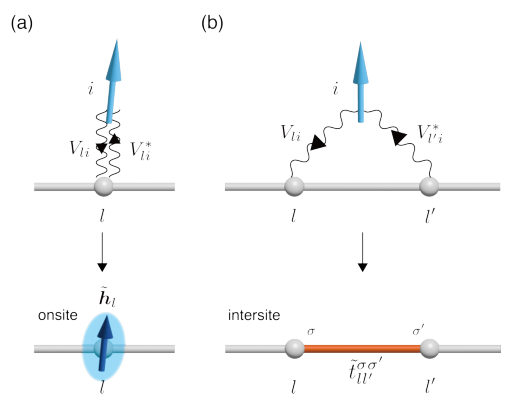
<figcaption class="paper-figure-caption"><b>Fig 1.</b> FIG. 1. Schematic illustration of virtual c–f hybridization processes and their consequences in the localized-4f regime: (a) the local effective field ˜hl, and (b) the nonlocal spin- dependent hopping ˜tσσ′ ll′ . Upper panels show representative processes, and lower panels show the corresponding effective terms. The blue arrows and white spheres denote the 4f- electron spins and the conduction-electron sites, respectively.</figcaption>
</figure>
<figure class="paper-figure-card">
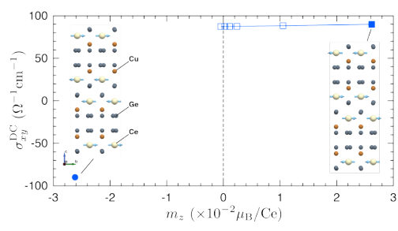
<figcaption class="paper-figure-caption"><b>Fig 2.</b> FIG. 2. Intrinsic AHC σDC xy versus canting magnetization mz. Filled symbols represent the results with the molecular field for collinear antiferromagnetic (AFM) order along the b axis, as shown in the insets. Open symbols denote canting tuned by a uniform field along the c axis, with a fixed in-plane mag- netic configuration. The crystal structures are generated by QtDraw [58].</figcaption>
</figure>
<figure class="paper-figure-card">

<figcaption class="paper-figure-caption"><b>Fig 3.</b> FIG. 3. (a) Band structure from the effective Hamiltonian. The color map shows the atomic-scale total angular momen- tum polarization Jz (sign indicated by the color bar at the top). (b) Zoom-in of the dashed region in (a). Panels (c) and (d) show the results obtained by retaining only the Ge 4p local effective field and Ge 4p nonlocal effective hopping, re- spectively.</figcaption>
</figure>
<figure class="paper-figure-card">
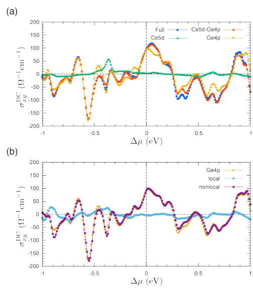
<figcaption class="paper-figure-caption"><b>Fig 4.</b> FIG. 4. Intrinsic AHC σDC xy versus a chemical potential shift ∆µ from the Fermi level, with decomposition into several con- tributions. (a) A decomposition into Ce 5d and Ge 4p contri- butions. The blue squares labeled with ‘Full’ correspond to the result of the effective Hamiltonian. (b) A decomposition of the Ge 4p contribution into local effective-field and nonlo- cal effective-hopping components.</figcaption>
</figure>
</div>

<p><strong>Summary.</strong> The paper theoretically investigates the anomalous Hall effect in $f$-electron antiferromagnets by developing an effective Hamiltonian derived from strong correlation physics. It concludes that the AHE is fundamentally driven by nonlocal spin-dependent hopping mediated by Kondo exchange coupling, rather than local magnetic fields or itinerant electron behavior alone.</p>
<p><strong>Why it may be interesting.</strong> This work provides a detailed many-body theoretical framework connecting magnetic order (AFM) to transport phenomena (AHE) in strongly correlated materials using concepts like Kondo exchange, which are central to understanding complex electronic states beyond simple band theory.</p>
<details>
<summary>Detailed structure</summary>
<p><strong>Main problem.</strong> The study aims to elucidate the microscopic origin of the intrinsic anomalous Hall effect (AHE) in antiferromagnetic $f$-electron metals, particularly where localized magnetic moments interact with itinerant conduction electrons.</p>
<p><strong>Main result.</strong> The AHE is found to originate from nonlocal spin-dependent intersite hopping induced by Kondo exchange coupling, rather than a simple local Zeeman field or canting magnetization effect. The $    ext{Ge } 4p$ orbitals provide the dominant contribution to this effect.</p>
<p><strong>Method.</strong> The authors developed a theoretical framework using Green's function techniques and derived an effective Hamiltonian analogous to the Kondo lattice model, incorporating strong correlation effects via approximations like Hubbard-I.</p>
<p><strong>Model / system.</strong> The system is modeled as a localized-$4f$ antiferromagnetic metal ($ ext{Ce}_2   ext{CuGe}_6$), described by a tight-binding Hamiltonian coupling conduction ($c$) and $f$ electrons. The strong correlations are treated using DMFT/Hubbard-I approximations.</p>
<p><strong>Key observables.</strong> Intrinsic Anomalous Hall Conductivity ($\sigma_{DC}^{xy}$), spin splitting of energy bands, and the dependence of $\sigma_{DC}^{xy}$ on canting magnetization ($m_z$).</p>
<p><strong>Important parameters / regimes.</strong> Kondo temperature ($T_K \simeq 1 	ext{ K}$); hybridization terms ($\hat{V}(\mathbf{k})$); molecular field strengths controlling AFM order.</p>
<p><strong>Assumptions / limitations.</strong> The analysis relies on deriving an effective Hamiltonian that captures the physics of $c-f$ hybridization, often simplifying by neglecting orbital degeneracy or assuming specific magnetic ordering patterns.</p>
<p><strong>Figures summary.</strong> Figures illustrate the comparison between local vs. nonlocal contributions to AHE (Figure 1), plot $\sigma_{DC}^{xy}$ dependence on canting magnetization ($m_z$) showing robustness against $m_z$ changes (Figure 2), and show band structure polarization related to spin splitting (Figure 3).</p>
<p><strong>Paper structure.</strong> The paper progresses by establishing the theoretical necessity of an effective Hamiltonian for correlated systems, deriving this model from a full Green's function approach incorporating strong correlations, and finally applying it to calculate $\sigma_{DC}^{xy}$ while decomposing contributions to pinpoint the nonlocal hopping mechanism.</p>
</details>
<details>
<summary>Abstract</summary>
<p>The anomalous Hall effect in antiferromagnetic metals has attracted considerable attention. Most known realizations involve itinerant $d$ electrons that simultaneously mediate charge transport and magnetic order. Here, we focus on $f$-electron materials, where localized magnetic moments and conduction electrons are hosted in different orbitals. We develop a theoretical framework to describe the impact of localized antiferromagnetic order on itinerant electrons. Applying this approach to the recently discovered $4f$ antiferromagnetic metal $\mathrm{Ce}_{2}\mathrm{Cu}\mathrm{Ge}_{6}$, we identify the origin of both the intrinsic anomalous Hall conductivity and the spin splitting of the energy bands as spin-dependent intersite hopping induced by nonlocal Kondo exchange coupling, rather than a Zeeman-type effective field acting locally on the conduction electrons.</p>
</details>
<p><sub><a href="#top">↑ back to top</a></sub></p>

<p><a id="paper-2607.04015"></a></p>
<h3 id="the-delayed-stabilizer-zx-calculus"><a href="http://arxiv.org/abs/2607.04015v1">The Delayed Stabilizer ZX-Calculus</a></h3>
<p><strong>Authors:</strong> Cole Comfort, Giovanni de Felice<br>
<strong>Type:</strong> theory · <strong>Category:</strong> quantum information and computing · <strong>PDF:</strong> <a href="https://arxiv.org/pdf/2607.04015v1">https://arxiv.org/pdf/2607.04015v1</a><br>
<strong>Analysis basis:</strong> full PDF text, analyzed in chunks
<strong>Topic relevance:</strong> <code>analog quantum simulation</code> <strong>3/5</strong> · <code>correlated / nonlocal dissipation</code> <strong>1/5</strong> · <code>correlated cavity matter</code> <strong>1/5</strong> · <code>driven-dissipative phase transition</code> <strong>1/5</strong> · <code>entanglement &amp; information structure</code> <strong>1/5</strong> · <code>methods for driven-dissipative</code> <strong>1/5</strong> · <code>non-equilibrium dynamics</code> <strong>1/5</strong></p>
<div class="figure-strip-hint">↔ Scroll figures horizontally</div>
<div class="paper-figures-scroll">
<figure class="paper-figure-card">

<figcaption class="paper-figure-caption"><b>Fig 1.</b> Figure 2: Axioms of the delayed stabilizer ZX-calculus.</figcaption>
</figure>
<figure class="paper-figure-card">

<figcaption class="paper-figure-caption"><b>Fig 2.</b> Figure 3: Infinitely unrolled surface code of Example 14. Dotted lines denote wires connected by a Hadamard gate.</figcaption>
</figure>
<figure class="paper-figure-card">
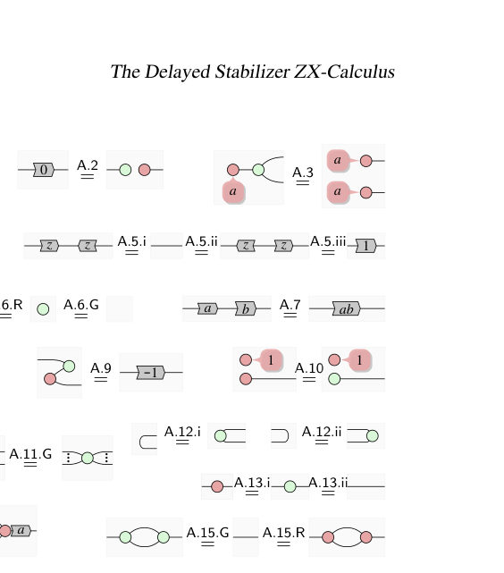
<figcaption class="paper-figure-caption"><b>Fig 3.</b> Figure 4: Axioms of the Graphical Affine Algebra [7] (GAA), where a,b,z ∈K with z ̸= 0.</figcaption>
</figure>
</div>

<p><strong>Summary.</strong> The paper develops the delayed stabilizer ZX-calculus ($\delta$ZX) to overcome the limitations of standard diagrams when modeling infinitely repeating quantum structures like lattice codes. By introducing a 'delay' generator and defining two formal semantics, it provides a complete algebraic framework for representing and simplifying these infinite processes into unique canonical forms.</p>
<p><strong>Why it may be interesting.</strong> This work provides a powerful mathematical tool for analyzing large-scale quantum systems, such as those found in solid-state or photonic implementations of QEC codes, by providing a rigorous way to handle infinite periodic boundary conditions.</p>
<details>
<summary>Detailed structure</summary>
<p><strong>Main problem.</strong> Ordinary stabilizer ZX-diagrams are insufficient for modeling quantum processes that exhibit infinite, translation-invariant structures across space or time.</p>
<p><strong>Main result.</strong> The authors introduce the delayed stabilizer ZX-calculus ($\delta$ZX), establishing a unique normal form and proving soundness, universality, and completeness for its generating tableau semantics.</p>
<p><strong>Method.</strong> The calculus extends the standard ZX-diagram formalism with a 'delay' generator ($\delta$), allowing the representation of infinite processes via formal variables encoding generating functions.</p>
<p><strong>Model / system.</strong> The theory models stabilizer quantum error-correcting codes and general translation-invariant quantum circuits, originally formulated for qudits based on an odd prime $p$. The formalism relates these physical systems to algebraic structures like affine Lagrangian subspaces.</p>
<p><strong>Key observables.</strong> Infinite stabilizer groups; equivalence classes of sequences of quantum channels; generating functions encoding Pauli operators.</p>
<p><strong>Important parameters / regimes.</strong> The delay parameter ($\delta$); the dimension related to an odd prime $p$; matrix entries in the field $\mathbb{F}_p(\delta)$.</p>
<p><strong>Assumptions / limitations.</strong> The primary assumption is that infinite, translation-invariant processes can be captured by extending the finite ZX calculus with a formal delay variable.</p>
<p><strong>Figures summary.</strong> Figures illustrate axioms of the standard ZX calculus encoding Pauli operators ($Z^z X^x$) and provide examples for various quantum states (e.g., Bell states).</p>
<p><strong>Paper structure.</strong> The paper first establishes the foundational equivalence between stabilizer mechanics, symplectic linear algebra, and the standard ZX-calculus. It then develops the delayed calculus by introducing $\delta$, providing two semantics (channel sequences and generating functions), and finally proving a complete reduction to a unique normal form via matrix algebra techniques.</p>
</details>
<details>
<summary>Abstract</summary>
<p>Many stabilizer quantum error-correcting codes are built from a finite pattern repeated across space or time, such as lattice codes, translation-invariant graph states, and quantum convolutional codes. Ordinary stabilizer ZX-diagrams capture only finite truncations of such systems, obscuring the repeated structure that defines them. We introduce the delayed stabilizer ZX-calculus, a finite graphical language for these infinite, translation-invariant processes. It extends the odd-prime-dimensional stabilizer ZX-calculus with a single new generator, the delay, which feeds data from one time step to the next. We equip the calculus with two semantics. In the first semantics, we interpret the behaviour of a delayed ZX-diagram as an equivalence class of sequences of quantum channels; where two sequences are identified if they have the same information content. We show that the behaviour of a delayed ZX-diagram uniquely determines an infinite stabilizer group. In the second semantics, we interpret the delay as a formal variable, encoding the translation-invariant families of Pauli operators as generating functions. This allows us to represent a delayed ZX-diagram in terms of a tableau of generating functions, from which the infinite stabilizer group can be recovered. Finally, we give a complete axiomatization of the delayed stabilizer ZX-calculus, featuring generalised Euler decomposition and colour change rules. Using generalised forms of local complementation and pivoting, we reduce every diagram to a unique normal form. This establishes soundness, universality, and completeness for the generating tableau semantics.</p>
</details>
<p><sub><a href="#top">↑ back to top</a></sub></p>

<p><a id="paper-2607.04766"></a></p>
<h3 id="strain-and-potential-controlled-tunneling-in-monolayer-mosmath709math"><a href="http://arxiv.org/abs/2607.04766v1">Strain- and potential-controlled tunneling in monolayer MoS$_2$</a></h3>
<p><strong>Authors:</strong> Hasna Chnafa, Rachid El Aitouni, Clarence Cortes, David Laroze, Ahmed Jellal<br>
<strong>Type:</strong> theory · <strong>Category:</strong> other · <strong>PDF:</strong> <a href="https://arxiv.org/pdf/2607.04766v1">https://arxiv.org/pdf/2607.04766v1</a><br>
<strong>Analysis basis:</strong> full PDF text, analyzed in chunks
<strong>Topic relevance:</strong> <code>exotic spin models in light-matter</code> <strong>3/5</strong> · <code>spintronics-quantum-optics interface</code> <strong>3/5</strong> · <code>Keldysh / 2PI / non-Gaussian methods</code> <strong>1/5</strong> · <code>non-equilibrium dynamics</code> <strong>1/5</strong></p>
<div class="figure-strip-hint">↔ Scroll figures horizontally</div>
<div class="paper-figures-scroll">
<figure class="paper-figure-card">
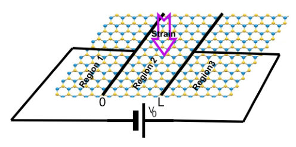
<figcaption class="paper-figure-caption"><b>Fig 1.</b> FIG. 1. Schematic illustration of a molybdenum disulfide MoS2 sheet under a uniaxial strain field and an external scalar electrostatic potential applied along the transport direction x, which divides the sheet into three distinct regions.</figcaption>
</figure>
<figure class="paper-figure-card">

<figcaption class="paper-figure-caption"><b>Fig 2.</b> FIG. 2. The energy E (16) of region II versus the wave vector qx for barrier height V0 = 1 eV and different strain values ε = 0, 0.05, 0.1, 0.15. The K valley is displayed in (a) while K′ in (b).</figcaption>
</figure>
<figure class="paper-figure-card">
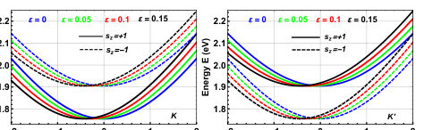
<figcaption class="paper-figure-caption"><b>Fig 3.</b> Figure 2 displays the energy E in region II versus the wave vector qx for a barrier height V0 = 1 eV and different strain values ε, with (a): valley K and (b): while valley K′. In both cases, the bands exhibit a parabolic dis- persion characteristic of massive carriers in MoS2, with a clear separation between the spin states sz = +1 and sz = −1, due to strong spin-orbit coupling [7, 42–44]. This separation depends on the valley: the order of spin levels is reversed between K and K′, which is a direct sig- nature of spin–valley locking in transition metal dichalco- genides. The increase in deformation ε causes an overall shift of the bands towards higher energies and a slight change in their...</figcaption>
</figure>
<figure class="paper-figure-card">

<figcaption class="paper-figure-caption"><b>Fig 4.</b> FIG. 3. Transmission probability versus the angle of incidence θ in K and K′ valleys for E = 2 eV, L = 4 nm, ε = 0, 0.4 and two barrier height values (a)/(b): V0 = 6 eV, (c)/(d): V0 = 7 eV.</figcaption>
</figure>
<figure class="paper-figure-card">

<figcaption class="paper-figure-caption"><b>Fig 5.</b> FIG. 4. Transmission probability versus the barrier height V0 in K and K′ valleys for E = 2 eV, L = 1 nm, ε = 0, 0.4 and two wave vector values (a)/(b): ky = 0.5 nm−1, (c)/(d): ky = 2.5 nm−1</figcaption>
</figure>
</div>

<p><strong>Summary.</strong> The paper theoretically explores how combining mechanical strain and electrostatic potentials can precisely control spin and valley polarization in monolayer MoS2. By analyzing quantum transport through engineered potential barriers, the authors predict a dual-knob control scheme that allows for independent tuning of conductance oscillations using these two external fields. This offers a powerful platform for realizing advanced spintronic devices.</p>
<p><strong>Why it may be interesting.</strong> This work demonstrates highly tunable control over fundamental quantum degrees of freedom (spin and valley) in a 2D material using external fields, which is central to developing next-generation spintronic and valleytronic devices.</p>
<details>
<summary>Detailed structure</summary>
<p><strong>Main problem.</strong> The study investigates spin- and valley-resolved quantum transport in monolayer MoS2 when subjected to the simultaneous influence of mechanical strain and an external scalar potential, a combination previously unexplored.</p>
<p><strong>Main result.</strong> The interplay between strain and electrostatic potential allows for orthogonal control over both valley and spin polarization, enabling phenomena like 'electrostatic spin inversion' purely via gate tuning.</p>
<p><strong>Method.</strong> Theoretical analysis using an effective massive Dirac Hamiltonian incorporating intrinsic spin-orbit coupling to model electron transmission through a barrier region.</p>
<p><strong>Model / system.</strong> The system is monolayer MoS2 modeled by an effective Hamiltonian that includes terms for Fermi velocity, band gap, spin-orbit coupling, and strain. The transport calculation involves solving coupled differential equations across regions defined by the potential barrier and strain field.</p>
<p><strong>Key observables.</strong> Spin polarization ($P_s$), valley polarization ($P_v$), resonant transmission probability ($T_{	au s_z}$), and total conductance ($G$).</p>
<p><strong>Important parameters / regimes.</strong> Mechanical strain ($\epsilon$), electrostatic potential barrier height ($V_0$), barrier width ($L$), and incident energy ($E$).</p>
<p><strong>Assumptions / limitations.</strong> The analysis assumes a continuum effective Dirac Hamiltonian, neglects higher-band corrections or intervalley scattering, and ignores disorder effects.</p>
<p><strong>Figures summary.</strong> Figure 1 schematically illustrates the MoS2 sheet under uniaxial strain and an external scalar electrostatic potential. Figure 11 shows spin polarization vs. strain for various barrier widths and energies.</p>
<p><strong>Paper structure.</strong> The paper develops the Hamiltonian incorporating strain and potential, derives transmission coefficients using boundary matching conditions across three distinct regions (outside/inside/outside the barrier), and analyzes how varying parameters controls spin/valley polarization via quantum interference effects.</p>
</details>
<details>
<summary>Abstract</summary>
<p>We present a theoretical study of spin- and valley-resolved quantum transport in monolayer MoS$_2$ under the combined influence of mechanical strain and an external scalar potential, a combination whose simultaneous unexplored. Within an effective massive Dirac Hamiltonian that incorporates intrinsic spin--orbit coupling, strain induces valley-dependent momentum shifts that lift the degeneracy between the $K$ and $K'$ valleys and strongly modify the transport characteristics. The scalar potential modifies the tunneling spectrum, leading to pronounced changes in resonant transmission, Fabry--Pérot interference, and conductance. We show that the interplay between strain and electrostatic potential enables efficient control of both valley and spin polarization of the transmitted current. In particular, we identify a dual-knob control scheme in which the barrier width governs the frequency of conductance oscillations while strain independently controls their phase and amplitude. Furthermore, we predict electrostatic spin inversion -- a sign reversal of spin polarization achievable purely by gate tuning at finite strain, requiring no geometric reconfiguration. Depending on the strain orientation, the transmission probability and conductance can be selectively suppressed or enhanced, resulting in highly tunable valley- and spin-polarized transport. These findings demonstrate that strain and potential engineering provide orthogonal and independently operable mechanisms for controlling conductance as well as spin and valley degrees of freedom in monolayer MoS$_2$, offering promising prospects for spintronic and valleytronic device applications.</p>
</details>
<p><sub><a href="#top">↑ back to top</a></sub></p>

<p><a id="paper-2607.04966"></a></p>
<h3 id="super-molasses-returns-all-optical-near-resonance-laser-cooling-and-trapping-of-neutral-atoms-from-background-vapor"><a href="http://arxiv.org/abs/2607.04966v1">Super-molasses returns: All optical near-resonance laser cooling and trapping of neutral atoms from background vapor</a></h3>
<p><strong>Authors:</strong> Matt Himsworth, Chester Camm, Max Carey, Jack Saywell, Jonathan Woods, Vilius Atkoucius, Florence Concepcion, Konstantinos Karakostas, Hannah Brady, Doruk Tan Atila, Ellie Heywood, Alex Jantzen, Andrei Dragomir, Christopher Morley, James Bateman<br>
<strong>Type:</strong> both · <strong>Category:</strong> other · <strong>PDF:</strong> <a href="https://arxiv.org/pdf/2607.04966v1">https://arxiv.org/pdf/2607.04966v1</a><br>
<strong>Analysis basis:</strong> full PDF text, analyzed in chunks
<strong>Topic relevance:</strong> <code>quantum optics experiment</code> <strong>3/5</strong> · <code>analog quantum simulation</code> <strong>2/5</strong> · <code>QC/QI experiment</code> <strong>1/5</strong> · <code>driven-dissipative phase transition</code> <strong>1/5</strong> · <code>interference shaping light</code> <strong>1/5</strong></p>
<div class="figure-strip-hint">↔ Scroll figures horizontally</div>
<div class="paper-figures-scroll">
<figure class="paper-figure-card">

<figcaption class="paper-figure-caption"><b>Fig 1.</b> FIG. 1: Left: The laser beam geometry used in this paper to produce the super-molasses trap, with incident (green) beams forming a tripod and angled from the vertical by 35◦and retro-reflected (red) beams misaligned by very small angles. Polarization is linear as shown in blue, although the trap can operate with circular and combinations of polarization. Right: A (inverted greyscale) fluorescence image of the trapped ensemble of rubidium atoms. The laser beams have been aligned to produce an extended cloud to highlight the lattice structure. The vertical dimension of the cloud is approximately 3 mm. Denser and more spherical clouds can be obtained with different beam reflection angles.</figcaption>
</figure>
<figure class="paper-figure-card">
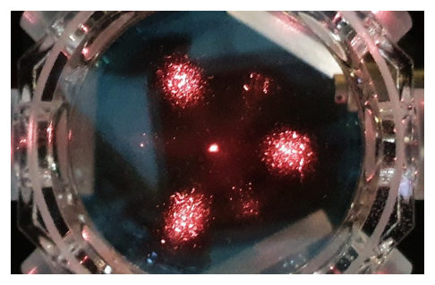
<figcaption class="paper-figure-caption"><b>Fig 2.</b> FIG. 2: A photograph of the SMT taken along the z-axis of Figure 1). The three retro-reflected beams can be seen scattering on the top chamber window, at the center of which is the brighter cold atom cloud.</figcaption>
</figure>
<figure class="paper-figure-card">
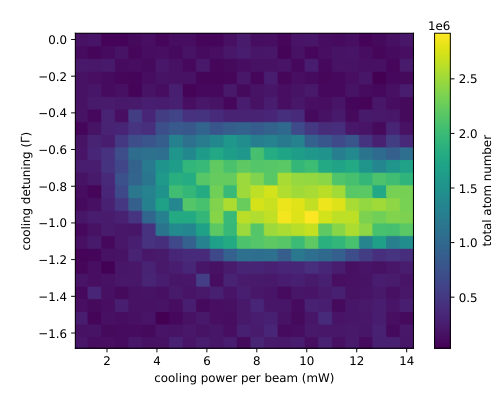
<figcaption class="paper-figure-caption"><b>Fig 3.</b> FIG. 3: Dependence of atom number in the SMT on laser detuning and power. We see a peak of approximately 2.5 million atoms at -1 Γ detuning and 10 mW per beam. The peak atom number is highly dependent on beam alignments but once a global maximum is found the atom number is quite consistent for the same beam width.</figcaption>
</figure>
<figure class="paper-figure-card">
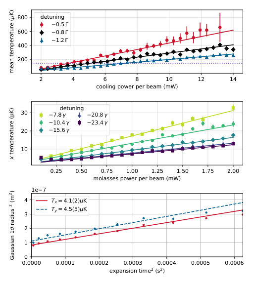
<figcaption class="paper-figure-caption"><b>Fig 4.</b> FIG. 4: Top: The trapped ensemble temeratues before the ’molasses’ stage for a selection of detunings. The solid lines are linear fits to guide the eye, and the dashed line indicates the Doppler Temperature for 87Rb. Middle: The trapped ensemble temperature after a ‘molasses’ stage during which the laser detuning is shifted to the displayed frequency in 2 ms, whilst the power is linearly ramped down to different final values. Solid lines are linear fits to guide the eye. Bottom: An example of the ensemble radius expansion data (dots) used calculate the temperature (lines). We see the temperature is uniform along both axes.</figcaption>
</figure>
<figure class="paper-figure-card">

<figcaption class="paper-figure-caption"><b>Fig 5.</b> FIG. 5: The Allan Deviation of the trap centre (Top) and size (Bottom) over several timescales. The center is determined by fitting of a 2D Gaussian to absorption image. Short term instability is dominated by vibrations of the undamped table due to nearby traffic.</figcaption>
</figure>
</div>

<p><strong>Summary.</strong> The authors present the Super-Molasses Trap (SMT), an alternative method for cooling and trapping neutral atoms using only optical fields, eliminating the need for external magnetic fields. The technique achieves high atom numbers and densities comparable to MOTs while enabling sub-microkelvin cooling. This makes it a promising new tool for quantum sensing and fundamental physics experiments.</p>
<p><strong>Why it may be interesting.</strong> This work provides a powerful, field-free platform for creating cold atom ensembles, which is highly relevant for developing novel quantum sensors or building atomic clocks that are less susceptible to magnetic field noise.</p>
<details>
<summary>Detailed structure</summary>
<p><strong>Main problem.</strong> To describe an alternative laser trap for cooling and trapping neutral atoms that operates without relying on a magnetic field, overcoming limitations of traditional Magneto-Optical Traps (MOTs).</p>
<p><strong>Main result.</strong> The Super-Molasses Trap (SMT) successfully traps and cools cold atoms to microkelvin temperatures with high density, achieving performance comparable to MOTs but using only optical fields.</p>
<p><strong>Method.</strong> Experimental implementation of the SMT using a simple geometry of collimated laser beams in a tripod configuration, combined with theoretical analysis of dipole trapping potentials.</p>
<p><strong>Model / system.</strong> The system involves cooling and trapping neutral atoms (e.g., $^{87}	ext{Rb}$) from background vapor using near-resonance laser fields that create a velocity and position-dependent restoring force without external magnetic gradients.</p>
<p><strong>Key observables.</strong> Atom number ($>10^6$), density ($\sim 10^{10}/	ext{cm}^3$), and temperature (down to $\mu	ext{K}$ range).</p>
<p><strong>Important parameters / regimes.</strong> Laser detuning ($\Delta$), laser power, background vapor pressure ($10^{-11}$ to $10^{-10} 	ext{ mbar}$).</p>
<p><strong>Assumptions / limitations.</strong> The trapping mechanism is believed to be related to super-molasses cooling and dipole lattice formation, but a full quantitative theoretical explanation remains elusive.</p>
<p><strong>Figures summary.</strong> Figures show the laser beam geometry (tripod), dependence of atom number on detuning/power, and temperature measurements demonstrating cooling down to $\mu	ext{K}$ levels after an 'optical molasses' stage.</p>
<p><strong>Paper structure.</strong> The paper introduces the SMT as an alternative to MOTs, details experimental measurements showing high performance metrics (density, temperature), discusses the underlying physics via comparison with established techniques, and concludes by highlighting the potential for quantum applications while acknowledging theoretical gaps.</p>
</details>
<details>
<summary>Abstract</summary>
<p>Laser cooled and trapped atoms have been the workhorse of atomic physics for the past four decades. The predominant method has been the highly versatile Magneto-Optical Trap. We describe an alternative laser trap involving a simple geometry of collimated laser beams that provides both a velocity and position dependent restoring force such that a dense cloud of cold atoms is formed. This technique produces similar atom number ($>10^6$) and density ($10^{10}$\,atoms/cm$^{3}$) to the Magneto-Optical Trap, albeit with \emph{no magnetic field}. The beam geometry is compatible with conventional sub-Doppler cooling techniques, allowing the trapped cloud to be cooled to $< 10~μ$K. We demonstrate the validity and robustness of the trap by capturing $^{87}$Rb atoms directly from the background vapor and provide a theoretical discussion of the underlying principles. This trap has many unique properties that make it highly suitable for quantum sensing, timing, and computing applications as well as a new tool in fundamental science and metrology.</p>
</details>
<p><sub><a href="#top">↑ back to top</a></sub></p>

<p><a id="paper-2607.03753"></a></p>
<h3 id="efficient-analysis-of-carrier-transport-and-tm-te-emission-in-algan-uvc-leds-via-multi-band-localization-landscape-theory"><a href="http://arxiv.org/abs/2607.03753v1">Efficient Analysis of Carrier Transport and TM-TE Emission in AlGaN UVC LEDs via Multi-band Localization Landscape Theory</a></h3>
<p><strong>Authors:</strong> Yu-Ming Chang, Ping-Jie Zhuang, Marcel Filoche, Claude Weisbuch, James S. Speck, Yuh-Renn Wu<br>
<strong>Type:</strong> theory · <strong>Category:</strong> numerical methods · <strong>PDF:</strong> <a href="https://arxiv.org/pdf/2607.03753v1">https://arxiv.org/pdf/2607.03753v1</a><br>
<strong>Analysis basis:</strong> full PDF text, analyzed in chunks
<strong>Topic relevance:</strong> <code>methods for driven-dissipative</code> <strong>3/5</strong> · <code>non-equilibrium dynamics</code> <strong>2/5</strong> · <code>Keldysh / 2PI / non-Gaussian methods</code> <strong>1/5</strong> · <code>driven-dissipative phase transition</code> <strong>1/5</strong></p>
<div class="figure-strip-hint">↔ Scroll figures horizontally</div>
<div class="paper-figures-scroll">
<figure class="paper-figure-card">
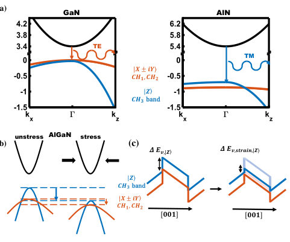
<figcaption class="paper-figure-caption"><b>Fig 1.</b> FIG. 1. (a) The band structure in GaN and AlN showing po- larization mode transitions from TE- to TM-dominant emis- sion as the valence band ground state changes from |X ± Y ⟩ to |Z⟩. (b) Schematic valence-band diagram of AlGaN with and without in-plane compressive stress. (c) When the com- pressive stress (deformation-potential term) is included in the QW, the valence-band edges (CH1–CH3) in the QW shift downward in energy, effectively making QW shallower as shown in (c).</figcaption>
</figure>
<figure class="paper-figure-card">

<figcaption class="paper-figure-caption"><b>Fig 2.</b> FIG. 2. (a) Three-dimensional aluminum composition distri- bution in AlGaN quantum wells based on the random alloy fluctuations. (b) The simulated structure shown is the MQW group with 2 nm AlGaN QW/10 nm AlGaN QB, 10 nm p-AlGaN and top 12 nm AlGaN graded-composition layer doped layer to help the hole carrier injection, and 33 nm p-GaN to form the ohmic contact with metal contact. (c) Vertical aluminum-composition profiles along the growth di- rection used with an AlGaN buffer for the five LED struc- tures, targeting emission at 294, 278, 263, 249, and 223 nm. (d) Vertical aluminum-composition profiles used with an AlN buffer for the six LED structures, targeting emission at 257, 251, 244,...</figcaption>
</figure>
<figure class="paper-figure-card">

<figcaption class="paper-figure-caption"><b>Fig 3.</b> FIG. 3. Simulation flowchart of the 3D-DDCC program.</figcaption>
</figure>
<figure class="paper-figure-card">

<figcaption class="paper-figure-caption"><b>Fig 4.</b> FIG. 4. Wavelength-dependent polarization ratio (220– 300 nm) of AlGaN UVC LEDs for AlGaN- and AlN-buffer cases. The LL (Wigner–Weyl) model matches the 6 × 6 k · p trend and reproduces the buffer-dependent TE-TM crossover, consistent with literature experiments. Among the experi- mental references, Ref. A (green point) is for the AlN-buffer case, whereas Refs. B–G (orange-brown point) are for the AlGaN-buffer case. (Ref. A43, Ref. B44, Ref. C45, Ref. D46, Ref. E47, Ref. F48, Ref. G49)</figcaption>
</figure>
<figure class="paper-figure-card">
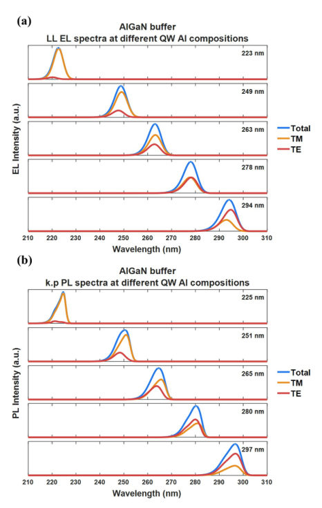
<figcaption class="paper-figure-caption"><b>Fig 5.</b> FIG. 5. TE- and TM-resolved optical spectra calculated us- ing the (a) LL and (b) k · p methods for the AlGaN-buffer structure.</figcaption>
</figure>
</div>

<p><strong>Summary.</strong> This paper introduces an efficient Multi-band Localization Landscape (LL) model to simulate carrier transport and emission in AlGaN UVC LEDs. By replacing computationally intensive k.p eigenvalue problems with the LL formalism, the authors achieve significant speedups while maintaining accuracy. The method successfully models complex physics like strain effects and polarization switching crucial for optimizing high-efficiency deep-UV light sources.</p>
<p><strong>Why it may be interesting.</strong> The development of a computationally tractable quantum mechanical framework (LL model) that successfully replaces complex eigenvalue solvers for semiconductor device simulation is highly relevant to modeling open quantum systems in solid-state devices.</p>
<details>
<summary>Detailed structure</summary>
<p><strong>Main problem.</strong> The primary goal is to efficiently analyze carrier transport and determine TM-TE emission characteristics in AlGaN UVC LEDs, overcoming the computational expense of conventional k.p models.</p>
<p><strong>Main result.</strong> A novel multi-band Localization Landscape (LL) model significantly reduces simulation time while accurately reproducing spectral trends and polarization ratios compared to full 3D k.p calculations.</p>
<p><strong>Method.</strong> The authors employ a hybrid approach combining the LL model with the Wigner–Weyl formalism, solving it within a 3D drift-diffusion framework on a Finite Element Mesh (FEM).</p>
<p><strong>Model / system.</strong> The system is AlGaN UVC LEDs. The methodology involves coupling the LL theory to solve for carrier localization and band structure changes induced by strain and alloy fluctuations, which are then fed into a 3D drift-diffusion solver.</p>
<p><strong>Key observables.</strong> Emission/absorption spectra trends, polarization ratio (TE/TM), band structure, hole/electron current densities ($J_p, J_n$), and quantum efficiency (EQE).</p>
<p><strong>Important parameters / regimes.</strong> Al composition ($   ext{Al}<em 1-x>x   ext{Ga}</em>$), strain tensor components, operating wavelength (220–300 nm), and doping profiles.}   ext{N</p>
<p><strong>Assumptions / limitations.</strong> The LL theory is assumed to provide an accurate approximation of the full Schrödinger eigenvalue problem, allowing for computational efficiency gains. Strain effects are incorporated via deformation-potential terms.</p>
<p><strong>Figures summary.</strong> Figures illustrate band structure transitions based on polarization/strain, local strain variation causing band switching, and comparisons of carrier current density maps with and without including the crucial strain-induced deformation term.</p>
<p><strong>Paper structure.</strong> The paper introduces the physical problem (UVC LEDs), details the limitations of existing k.p methods, proposes the LL model as an efficient alternative, validates it by comparing results to known physics (strain effects on hole transport), and concludes with analysis of device performance metrics like IQE.</p>
</details>
<details>
<summary>Abstract</summary>
<p>AlGaN-based UVC LEDs (220-250 nm) suffer from poor hole confinement and strain-induced |Z&gt;-band dominance at high Al content (&gt;60%), leading to increased TM emission and reduced external quantum efficiency (EQE). While conventional k.p models combined with Schrodinger, Poisson, and drift-diffusion solvers are widely used to study optical transitions, they are computationally expensive. In this work, we apply the multiband Localization Landscape (LL) model, including the effect of strain, as an alternative that replaces the eigenvalue problem to efficiently capture quantum effects and carrier localization. Using the 3D multi-band LL model with the Wigner-Weyl formalism, we reproduce emission and absorption spectra trends similar to the results in 3D k.p calculations, but with significantly reduced simulation time. The polarization ratio also agrees well with published experimental results across a wide spectral range. Furthermore, we analyze electrical characteristics such as band structure, polarization switching, and carrier confinement under alloy fluctuations and strain. This multi-band LL-based approach provides a fast and reliable solution for understanding and optimizing UVC LED performance.</p>
</details>
<p><sub><a href="#top">↑ back to top</a></sub></p>

<p><a id="paper-2607.05195"></a></p>
<h3 id="integral-representations-of-math736math-divergences-for-general-von-neumann-algebras"><a href="http://arxiv.org/abs/2607.05195v1">Integral representations of $f$-divergences for general von Neumann algebras</a></h3>
<p><strong>Authors:</strong> Ricardo Correa da Silva, Markus B. Fröb, Gandalf Lechner, Leonardo Sangaletti<br>
<strong>Type:</strong> theory · <strong>Category:</strong> other · <strong>PDF:</strong> <a href="https://arxiv.org/pdf/2607.05195v1">https://arxiv.org/pdf/2607.05195v1</a><br>
<strong>Analysis basis:</strong> full PDF text, analyzed in chunks
<strong>Topic relevance:</strong> <code>entanglement &amp; information structure</code> <strong>3/5</strong> · <code>Keldysh / 2PI / non-Gaussian methods</code> <strong>1/5</strong> · <code>correlated / nonlocal dissipation</code> <strong>1/5</strong> · <code>driven-dissipative phase transition</code> <strong>1/5</strong> · <code>methods for driven-dissipative</code> <strong>1/5</strong></p>
<div class="figure-strip-hint">↔ Scroll figures horizontally</div>
<div class="paper-figures-scroll">
<figure class="paper-figure-card">
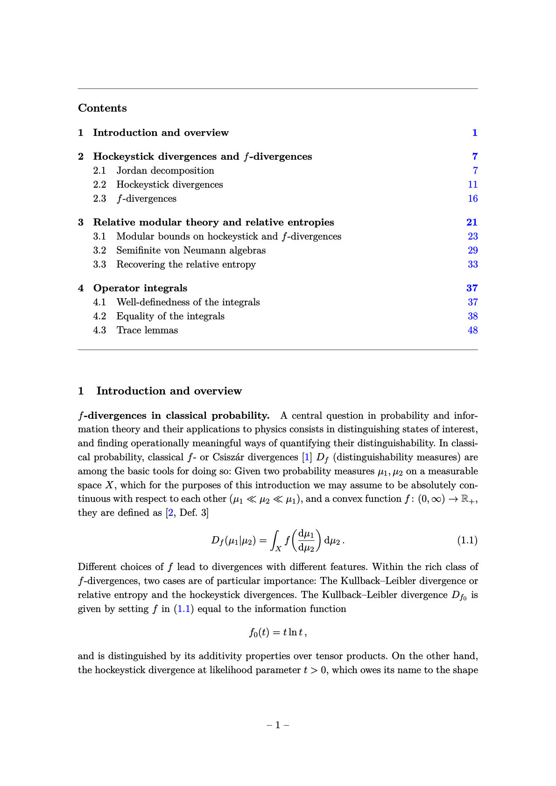
<figcaption class="paper-figure-caption"><b>Fig 1.</b> Low-resolution page preview, page 2</figcaption>
</figure>
<figure class="paper-figure-card">
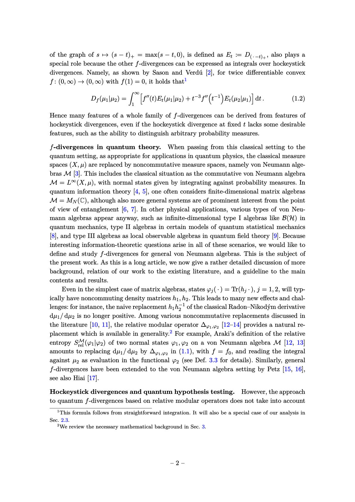
<figcaption class="paper-figure-caption"><b>Fig 2.</b> Low-resolution page preview, page 3</figcaption>
</figure>
<figure class="paper-figure-card">
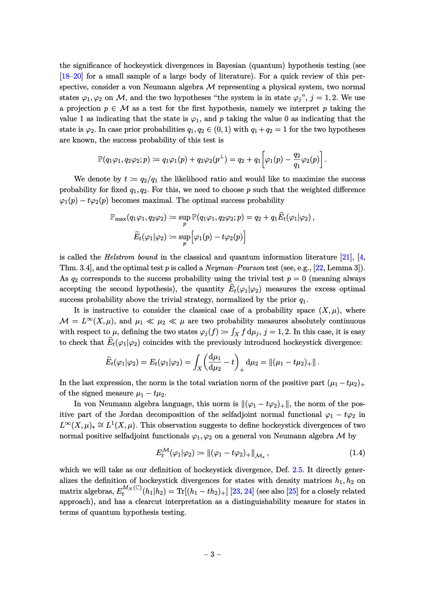
<figcaption class="paper-figure-caption"><b>Fig 3.</b> Low-resolution page preview, page 4</figcaption>
</figure>
<figure class="paper-figure-card">

<figcaption class="paper-figure-caption"><b>Fig 4.</b> Low-resolution page preview, page 5</figcaption>
</figure>
<figure class="paper-figure-card">
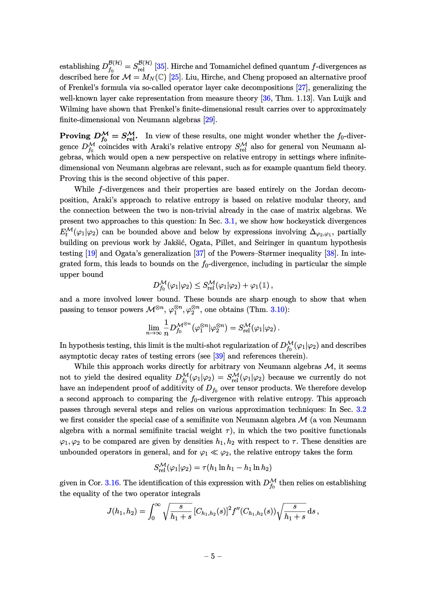
<figcaption class="paper-figure-caption"><b>Fig 5.</b> Low-resolution page preview, page 6</figcaption>
</figure>
</div>

<p><strong>Summary.</strong> This paper develops a powerful generalization of classical $f$-divergences to the setting of general von Neumann algebras, using 'hockeystick divergences' as the core mathematical tool. It rigorously analyzes the properties of these quantum state distinguishability measures and aims to prove their equivalence with the relative entropy, providing deeper mathematical foundations for quantum hypothesis testing in complex physical systems.</p>
<p><strong>Why it may be interesting.</strong> This work provides fundamental mathematical tools for quantifying distinguishability between quantum states in highly general settings (infinite dimensions), which is crucial for developing rigorous theories in quantum field theory or open quantum systems where standard measure theory fails.</p>
<details>
<summary>Detailed structure</summary>
<p><strong>Main problem.</strong> The paper defines and analyzes $f$-divergences and hockeystick divergences for normal positive functionals on general von Neumann algebras, aiming to generalize classical probability measures to quantum settings.</p>
<p><strong>Main result.</strong> It establishes that the properties of these generalized $f$-divergences (like monotonicity and convexity) can be derived from structural properties of the underlying algebra via hockeystick divergence representations. Furthermore, it aims to prove the equivalence between this generalized $f_0$-divergence and Araki's relative entropy for general von Neumann algebras.</p>
<p><strong>Method.</strong> The methodology involves defining divergences using operator norms on positive functionals (hockeystick divergences) and utilizing advanced tools from functional analysis, including spectral theory, trace identities, and convergence theorems applied to unbounded operators in the context of operator algebras.</p>
<p><strong>Model / system.</strong> The mathematical framework is built upon general von Neumann algebras ($M$), which serve as a generalization of classical measure spaces. The physical states are represented by normal positive functionals ($\phi$) on $M$, relevant for quantum statistical mechanics and QFT.</p>
<p><strong>Key observables.</strong> State distinguishability measures, specifically $f$-divergences and hockeystick divergences; the relative entropy ($D_{f_0}$ when $f(t)=t\ln t$).</p>
<p><strong>Important parameters / regimes.</strong> The structure of the von Neumann algebra (Type I, II, or III), and limits involving regularization parameters ($\epsilon 	o 0$) used to approach infinite-dimensional structures.</p>
<p><strong>Assumptions / limitations.</strong> The analysis assumes the existence of normal positive functionals on general von Neumann algebras and relies heavily on advanced theorems regarding traces and operator convergence in these non-commutative settings.</p>
<p><strong>Paper structure.</strong> The paper proceeds by first defining hockeystick divergences as a generalization tool, then analyzing the properties of $f$-divergences derived from them. It then tackles the difficult task of proving the equivalence between these generalized divergences and established quantum information measures like relative entropy via multi-shot regularization techniques.</p>
</details>
<details>
<summary>Abstract</summary>
<p>We define and analyze hockeystick divergences and $f$-divergences for normal positive functionals on general von Neumann algebras, generalizing and unifying previous work in classical probability and finite-dimensional von Neumann algebras. All the main properties of these state distinguishability measures (including in particular monotonicity, convexity, semicontinuity, bounds, state discrimination, data processing inequality) are derived from properties of the Jordan decomposition of selfadjoint normal functionals. This is done by representing the $f$-divergences as integrals over hockeystick divergences, and their significance in quantum hypothesis testing is reviewed. The $f_0$-divergence given by the information function $f_0(t) = t \ln t$ is shown to coincide with Araki's relative entropy, extending results of Frenkel to general von Neumann algebras.</p>
</details>
<p><sub><a href="#top">↑ back to top</a></sub></p>

<p><a id="paper-2607.04052"></a></p>
<h3 id="a-lie-jordan-geometric-formulation-of-lindblad-dynamics"><a href="http://arxiv.org/abs/2607.04052v1">A Lie-Jordan Geometric Formulation of Lindblad Dynamics</a></h3>
<p><strong>Authors:</strong> Leonel Bixano, Victor Alberto Cruz-Barriguete, Guillermo López-Alvarez, V. G. Ibarra-Sierra, José Luis Cardoso, Alejandro Kunold<br>
<strong>Type:</strong> theory · <strong>Category:</strong> other · <strong>PDF:</strong> <a href="https://arxiv.org/pdf/2607.04052v1">https://arxiv.org/pdf/2607.04052v1</a><br>
<strong>Analysis basis:</strong> full PDF text, analyzed in chunks
<strong>Topic relevance:</strong> <code>methods for driven-dissipative</code> <strong>3/5</strong> · <code>Keldysh / 2PI / non-Gaussian methods</code> <strong>1/5</strong> · <code>correlated / nonlocal dissipation</code> <strong>1/5</strong> · <code>driven-dissipative phase transition</code> <strong>1/5</strong></p>
<div class="figure-strip-hint">↔ Scroll figures horizontally</div>
<div class="paper-figures-scroll">
<figure class="paper-figure-card">

<figcaption class="paper-figure-caption"><b>Fig 1.</b> Low-resolution page preview, page 2</figcaption>
</figure>
<figure class="paper-figure-card">

<figcaption class="paper-figure-caption"><b>Fig 2.</b> Low-resolution page preview, page 3</figcaption>
</figure>
<figure class="paper-figure-card">

<figcaption class="paper-figure-caption"><b>Fig 3.</b> Low-resolution page preview, page 4</figcaption>
</figure>
<figure class="paper-figure-card">

<figcaption class="paper-figure-caption"><b>Fig 4.</b> Low-resolution page preview, page 5</figcaption>
</figure>
<figure class="paper-figure-card">

<figcaption class="paper-figure-caption"><b>Fig 5.</b> Low-resolution page preview, page 6</figcaption>
</figure>
</div>

<p><strong>Summary.</strong> This work introduces a Lie-Jordan geometric framework to provide a universal algebraic interpretation of dissipative evolution in open quantum systems. By decomposing the GKLS master equation into universal structural tensors and model-specific terms, it cleanly separates the underlying mathematical structure from the physics. This offers a powerful, systematic tool for analyzing any system undergoing Markovian dissipation.</p>
<p><strong>Why it may be interesting.</strong> This provides a deep algebraic and geometric underpinning for open quantum dynamics, offering tools to analyze the structure of dissipation independent of the specific physical Hamiltonian or Lindblad operators used.</p>
<details>
<summary>Detailed structure</summary>
<p><strong>Main problem.</strong> The paper develops a Lie-Jordan geometric formulation to systematically analyze the algebraic structure underlying open quantum dynamics governed by the Lindblad equation.</p>
<p><strong>Main result.</strong> It successfully separates the universal, basis-independent algebraic structure of dissipation from the model-dependent physical parameters (Lindblad operators and Kossakowski matrix).</p>
<p><strong>Method.</strong> The authors endow the Hilbert-Schmidt operator space with an orthonormal basis and encode quantum commutators/anticommutators using Lie and Jordan structure tensors to derive a universal trilinear dissipative map.</p>
<p><strong>Model / system.</strong> The focus is on finite-dimensional open quantum systems whose evolution is described by the Gorini-Kossakowski-Lindblad-Sudarshan (GKLS) master equation. The formalism is tested using qubit examples exhibiting pure dephasing and amplitude damping.</p>
<p><strong>Key observables.</strong> The component representation of the dissipator, $\dot{
ho}_\lambda$, and the resulting Bloch vector dynamics ($\dot{\mathbf{r}}$).</p>
<p><strong>Important parameters / regimes.</strong> Lindblad operators ($L_\alpha$), Kossakowski matrix ($\gamma_{\alphaeta}$), and the Lie/Jordan structure tensors ($C$ and $B$).</p>
<p><strong>Assumptions / limitations.</strong> The system evolution is assumed to be Markovian, completely positive, and trace-preserving.</p>
<p><strong>Figures summary.</strong> Not specified in the notes; the focus is on algebraic derivations and component equations rather than visual figure summaries.</p>
<p><strong>Paper structure.</strong> The paper builds from establishing the general geometric framework using structure tensors for commutators/anticommutators to deriving a universal dissipative map. It then applies this formalism to verify known results (like trace preservation) and illustrates it with specific qubit channels, concluding by showing equivalence to standard ordered-product derivations.</p>
</details>
<details>
<summary>Abstract</summary>
<p>We develop a Lie-Jordan geometric formulation of finite-dimensional open quantum dynamics, building on the algebraic framework introduced in our previous work (arXiv:2606.26477). The Hilbert-Schmidt operator space is endowed with an orthonormal Hermitian basis, in which the commutator and anticommutator are encoded by the structure tensors \(C_{μν}{}^λ\) and \(B_{μν}{}^λ\). Within this formulation, the von Neumann and Gorini-Kossakowski-Lindblad-Sudarshan equations admit a direct component representation. Our central result is the identification of a basis-independent universal trilinear dissipative map, \( \mathcal D(X,Y)Z=XZY-\frac12\{YX,Z\}, \) whose components define a universal operator-space tensor depending only on the Lie-Jordan structure tensors. The physical dissipator is obtained by contracting this tensor with the expansion coefficients of the Lindblad operators and the Kossakowski matrix, thereby separating the universal algebraic structure from the model-dependent physical information. We further show that the combinations \((B+C)\) and \((B-C)\) generate internal left and right transports, allowing the elementary dissipative map to be expressed as a left-right bimodule action corrected by an ordered Jordan contribution. The universal map satisfies basis-independent trace and Hermitian-conjugation identities, from which trace preservation, Hermiticity preservation of the complete dissipator, and the reality of its component representation in a Hermitian Hilbert-Schmidt basis follow. We also derive its Hilbert-Schmidt adjoint and illustrate the formalism for a qubit with pure dephasing and amplitude-damping channels. This construction provides a tensorial and affine-geometric interpretation of the universal superoperator structure derived in arXiv:2606.26477 while keeping the algebraic and model-dependent sectors explicitly separated.</p>
</details>
<p><sub><a href="#top">↑ back to top</a></sub></p>

<p><a id="paper-2607.04669"></a></p>
<h3 id="estimation-of-a-sparse-multi-qubit-hamiltonian-via-compressed-sensing"><a href="http://arxiv.org/abs/2607.04669v1">Estimation of a sparse multi-qubit Hamiltonian via compressed sensing</a></h3>
<p><strong>Authors:</strong> Juntao Tu, Yuanlong Wang, Shuming Cheng, Shuixin Xiao, Zhibo Hou<br>
<strong>Type:</strong> theory · <strong>Category:</strong> quantum information and computing · <strong>PDF:</strong> <a href="https://arxiv.org/pdf/2607.04669v1">https://arxiv.org/pdf/2607.04669v1</a><br>
<strong>Analysis basis:</strong> full PDF text, analyzed in chunks
<strong>Topic relevance:</strong> <code>quantum measurements</code> <strong>3/5</strong> · <code>analog quantum simulation</code> <strong>1/5</strong> · <code>measurement-induced transitions</code> <strong>1/5</strong></p>
<div class="figure-strip-hint">↔ Scroll figures horizontally</div>
<div class="paper-figures-scroll">
<figure class="paper-figure-card">
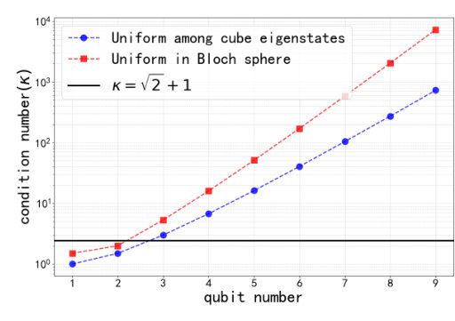
<figcaption class="paper-figure-caption"><b>Fig 1.</b> Fig. 1. The condition number of E(Φ†Φ) versus the qubit number , with the initial state being tensor product of single qubit each randomly generated from six eigenstates of cube measurement with equal probability (blue dots), or from a uniform probability distribution in Bloch sphere (red squares), and the black line shows the location where condition number is √</figcaption>
</figure>
<figure class="paper-figure-card">
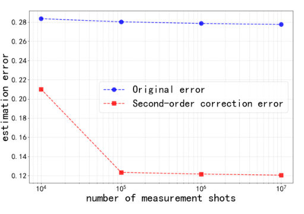
<figcaption class="paper-figure-caption"><b>Fig 2.</b> Fig. 2. Simulated estimation errors for a 6-qubit Hamiltonian</figcaption>
</figure>
<figure class="paper-figure-card">

<figcaption class="paper-figure-caption"><b>Fig 3.</b> Fig. 3. Simulated estimation errors for a 30-qubit Hamiltonian</figcaption>
</figure>
<figure class="paper-figure-card">

<figcaption class="paper-figure-caption"><b>Fig 4.</b> Fig. 3 shows the estimation error of the CS as a function of the number of measurement shots in the system (30).</figcaption>
</figure>
</div>

<p><strong>Summary.</strong> This paper tackles the challenge of determining the Hamiltonian of large multi-qubit quantum systems by framing it as a sparse signal recovery problem solvable via compressed sensing. To overcome the inherent mathematical difficulty—the failure of standard sampling conditions at high qubit numbers—the authors introduce a novel 'scale transformation' technique. This method ensures that accurate estimation remains possible even for dozens of qubits, significantly advancing the feasibility of characterizing complex quantum dynamics.</p>
<p><strong>Why it may be interesting.</strong> This work provides a crucial algorithmic breakthrough for characterizing complex quantum dynamics in large systems where full characterization is impossible. The focus on overcoming fundamental mathematical limitations (RIP failure) makes it highly relevant for scaling up quantum simulations.</p>
<details>
<summary>Detailed structure</summary>
<p><strong>Main problem.</strong> Estimating a sparse Hamiltonian for large multi-qubit quantum systems is computationally difficult due to the exponential growth of parameters.</p>
<p><strong>Main result.</strong> The authors propose a 'scale transformation' technique that restores the Restricted Isometry Property (RIP) required for compressed sensing, allowing accurate estimation using only $O(k \log(4^N/k))$ measurements.</p>
<p><strong>Method.</strong> The problem is formulated as solving an $\ell_1$-minimization problem ($\min \|h\|_1$ s.t. $\|ar{y} - \Phi h\|^2 \le \epsilon$) using compressed sensing principles, augmented by the scale transformation to handle ill-conditioning.</p>
<p><strong>Model / system.</strong> The system is an N-qubit quantum processor whose dynamics are governed by a sparse Hamiltonian $H$. The estimation relies on measuring expectation values of observables derived from Pauli matrices acting on initial states.</p>
<p><strong>Key observables.</strong> Measured expectation values $ar{y}_{ij} = \langle M_j 
angle_{
ho_i}$, and the measurement matrix $\Phi$ constructed from these measurements.</p>
<p><strong>Important parameters / regimes.</strong> The number of qubits ($N$), the sparsity level of the Hamiltonian ($k$), and the condition number ($\kappa$) of the measurement matrix's Gramian, which must remain below a critical threshold.</p>
<p><strong>Assumptions / limitations.</strong> The primary assumption is that the unknown Hamiltonian $h$ is sparse. A major technical challenge addressed is the 'scalability-induced ill-conditioning,' where standard CS fails for large N.</p>
<p><strong>Figures summary.</strong> Figures demonstrate the method's effectiveness by showing successful Hamiltonian estimation in 6- and 30-qubit systems, with error decreasing as measurement shots increase (though non-statistical errors persist).</p>
<p><strong>Paper structure.</strong> The paper establishes the linear system $ar{y} = \Phi h$, identifies the failure of standard CS due to increasing condition numbers ($\kappa$), and then introduces the scale transformation method to diagonalize the effective matrix, enabling robust reconstruction.</p>
</details>
<details>
<summary>Abstract</summary>
<p>Hamiltonian estimation is an effective approach in studying the structure and dynamical evolution of quantum systems. The difficulty in estimating the Hamiltonian is that an $N$-qubit Hamiltonian has $4^N-1$ unknown parameters, requiring exponentially many equations for information extraction. In this paper we develop a method based on compressed sensing to estimate the Hamiltonian of a multi-qubit system. We identify a problem where as $N$ increases, the common sufficient condition (Restricted Isometry Property) for compressed sensing often fails, obstructing the application of compressed sensing in ($N\geq 3$)-qubit Hamiltonian estimation. To solve this problem, we propose a ``scale transformation" technique to restore RIP and ensure a compressive estimation of a $k$-sparse Hamiltonian using only $O(k\log(4^N/k))$ equations. In the numerical examples, we estimate the Hamiltonians of two 6- and 30-qubit systems, demonstrating the effectiveness of the method.</p>
</details>
<p><sub><a href="#top">↑ back to top</a></sub></p>

<p><a id="paper-2607.04122"></a></p>
<h3 id="hall-coefficient-sign-reversal-driven-by-orbital-selective-oxygen-vacancy-scattering-in-nickelate-films"><a href="http://arxiv.org/abs/2607.04122v1">Hall Coefficient Sign Reversal Driven by Orbital-Selective Oxygen-Vacancy Scattering in Nickelate Films</a></h3>
<p><strong>Authors:</strong> Jian-Jian Miao, Yue Liu, Yue Zhao, Yichen Hua, Changming Yue, Wei-Qiang Chen<br>
<strong>Type:</strong> theory · <strong>Category:</strong> strongly correlated electrons · <strong>PDF:</strong> <a href="https://arxiv.org/pdf/2607.04122v1">https://arxiv.org/pdf/2607.04122v1</a><br>
<strong>Analysis basis:</strong> full PDF text, analyzed in chunks
<strong>Topic relevance:</strong> <code>Keldysh / 2PI / non-Gaussian methods</code> <strong>3/5</strong> · <code>methods for driven-dissipative</code> <strong>1/5</strong> · <code>non-equilibrium dynamics</code> <strong>1/5</strong></p>
<div class="figure-strip-hint">↔ Scroll figures horizontally</div>
<div class="paper-figures-scroll">
<figure class="paper-figure-card">

<figcaption class="paper-figure-caption"><b>Fig 1.</b> FIG. 1. Quasiparticle Fermi surface colored by the relative dx2−y2 orbital weight P x = 1 −2W x.</figcaption>
</figure>
<figure class="paper-figure-card">

<figcaption class="paper-figure-caption"><b>Fig 2.</b> FIG. 2. Rigid-band RH as a function of nvac and µ.</figcaption>
</figure>
<figure class="paper-figure-card">

<figcaption class="paper-figure-caption"><b>Fig 3.</b> FIG. 4. Pocket-resolved (solid lines) and orbital-selective (dashed lines) contributions to RH for the mixed 20/80 distribution, with τ0 = 50 fs.</figcaption>
</figure>
<figure class="paper-figure-card">
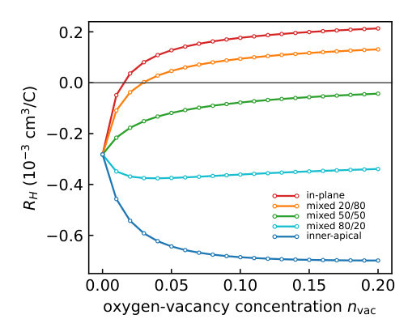
<figcaption class="paper-figure-caption"><b>Fig 4.</b> FIG. 3. RH as a function of nvac for five oxygen-vacancy distributions, with τ0 = 50 fs. A mixed distribution a/b denotes a% inner-apical and b% in-plane oxygen vacancies.</figcaption>
</figure>
<figure class="paper-figure-card">

<figcaption class="paper-figure-caption"><b>Fig 5.</b> FIG. 5. Numerical pocket assignment on the 2048 × 2048 k mesh. Blue, magenta, and red points denote the α, β, and γ pockets, respectively.</figcaption>
</figure>
</div>

<p><strong>Summary.</strong> This work theoretically explains the anomalous sign reversal in the Hall coefficient observed in nickelate superconductors. By combining correlated electron theory with detailed scattering calculations, the authors pinpoint that the effect is due to oxygen vacancies selectively disrupting the $d_{x^2-y^2}$ orbital's contribution to transport. This provides a crucial link between material stoichiometry and macroscopic electronic properties.</p>
<p><strong>Why it may be interesting.</strong> While focused on strongly correlated materials, the detailed treatment of transport coefficients (like R_H) using advanced many-body techniques provides a rigorous framework for understanding how local disorder (vacancies) selectively perturbs orbital character and electronic transport channels.</p>
<details>
<summary>Detailed structure</summary>
<p><strong>Main problem.</strong> The study aims to determine the microscopic origin of Hall coefficient (R_H) sign reversals observed in superconducting bilayer nickelate films.</p>
<p><strong>Main result.</strong> The sign reversal is attributed to orbital-selective scattering caused by oxygen vacancies, specifically showing that in-plane vacancies selectively suppress the $d_{x^2-y^2}$ orbital contribution, driving R_H through zero.</p>
<p><strong>Method.</strong> A correlated multi-orbital quasiparticle model derived from DFT+CDMFT is combined with a T-matrix treatment of scattering potentials within a semiclassical Boltzmann transport framework.</p>
<p><strong>Model / system.</strong> The system is superconducting bilayer nickelate films containing oxygen vacancies. The theoretical framework involves calculating transport properties using pocket-resolved contributions and modeling the vacancy potential via first-principles DFT calculations.</p>
<p><strong>Key observables.</strong> Hall coefficient (R_H), longitudinal conductivity ($\sigma_{aa}$), and orbital-selective Hall contributions ($R_r^H$).</p>
<p><strong>Important parameters / regimes.</strong> Oxygen-vacancy concentration ($n_{	ext{vac}}$), chemical potential ($\mu$), and the specific type/location of vacancies (in-plane vs. inner-apical).</p>
<p><strong>Assumptions / limitations.</strong> The analysis assumes a dilute-vacancy limit, uses the scalar relaxation-time approximation for scattering rates, and separates rigid-band doping effects from vacancy-induced changes.</p>
<p><strong>Figures summary.</strong> Figures illustrate quasiparticle Fermi surfaces showing multiple pockets ($\alpha, eta, \gamma$) and plot R_H vs. $n_{	ext{vac}}$, demonstrating how different vacancy distributions cause the sign reversal through orbital suppression.</p>
<p><strong>Paper structure.</strong> The paper first establishes that doping alone fails to explain the sign reversal. It then develops a comprehensive model incorporating orbital selectivity via DFT+CDMFT and T-matrix scattering theory, culminating in quantitative predictions showing the specific role of in-plane vacancies.</p>
</details>
<details>
<summary>Abstract</summary>
<p>Hall measurements in superconducting bilayer nickelate films show sign reversals that cannot be explained by rigid-band electron doping alone. We combine a DFT+CDMFT-derived correlated multi-orbital quasiparticle model with a $T$-matrix treatment of oxygen-vacancy scattering in a semiclassical Boltzmann transport framework. We find that multiband compensation is insufficient by itself: in-plane vacancies selectively suppress the transport channel dominated by the $d_{x^2-y^2}$ orbital and drive $R_H$ through zero, whereas inner-apical vacancies make $R_H$ more negative. These results identify pocket-resolved and orbital-selective oxygen-vacancy scattering as the microscopic origin of the Hall coefficient sign reversal and provide a framework for oxygen-stoichiometry-dependent transport in nickelate films.</p>
</details>
<p><sub><a href="#top">↑ back to top</a></sub></p>

<p><a id="paper-2607.04876"></a></p>
<h3 id="a-unified-electrostatic-to-spin-framework-for-asymmetric-multi-gate-cmos-quantum-devices"><a href="http://arxiv.org/abs/2607.04876v1">A Unified Electrostatic-to-Spin Framework for Asymmetric Multi-Gate CMOS Quantum Devices</a></h3>
<p><strong>Authors:</strong> Zeheng Wang, Yan Liu, Yue Hao, Genquan Han<br>
<strong>Type:</strong> theory · <strong>Category:</strong> strongly correlated electrons · <strong>PDF:</strong> <a href="https://arxiv.org/pdf/2607.04876v1">https://arxiv.org/pdf/2607.04876v1</a><br>
<strong>Analysis basis:</strong> full PDF text, analyzed in chunks
<strong>Topic relevance:</strong> <code>spintronics-quantum-optics interface</code> <strong>3/5</strong> · <code>Keldysh / 2PI / non-Gaussian methods</code> <strong>1/5</strong></p>
<div class="figure-strip-hint">↔ Scroll figures horizontally</div>
<div class="paper-figures-scroll">
<figure class="paper-figure-card">

<figcaption class="paper-figure-caption"><b>Fig 1.</b> Low-resolution page preview, page 2</figcaption>
</figure>
<figure class="paper-figure-card">

<figcaption class="paper-figure-caption"><b>Fig 2.</b> Low-resolution page preview, page 3</figcaption>
</figure>
<figure class="paper-figure-card">
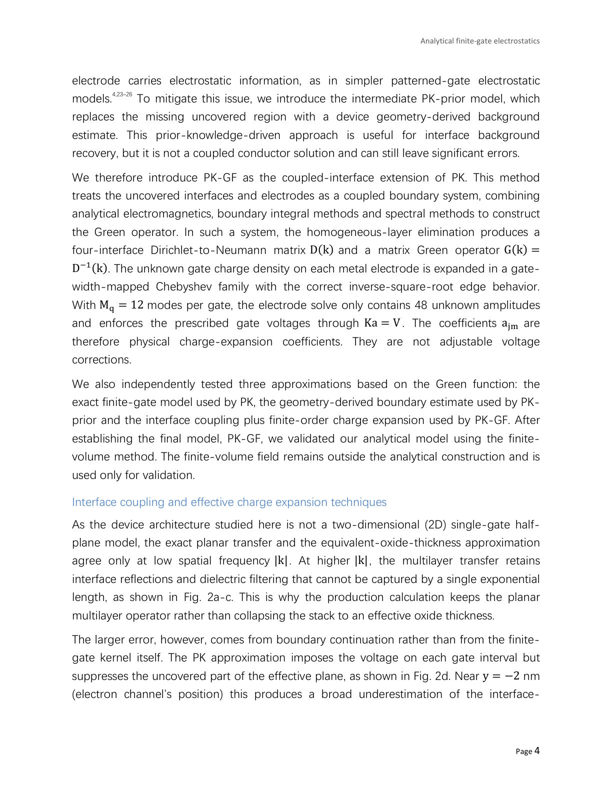
<figcaption class="paper-figure-caption"><b>Fig 3.</b> Low-resolution page preview, page 4</figcaption>
</figure>
<figure class="paper-figure-card">
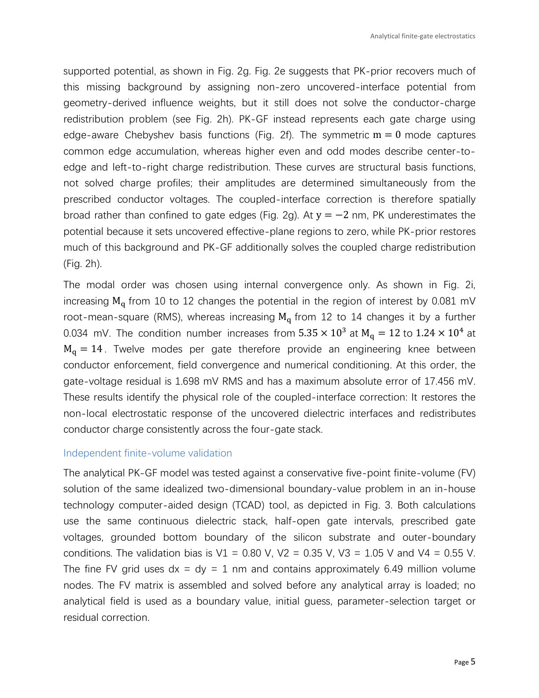
<figcaption class="paper-figure-caption"><b>Fig 4.</b> Low-resolution page preview, page 5</figcaption>
</figure>
<figure class="paper-figure-card">
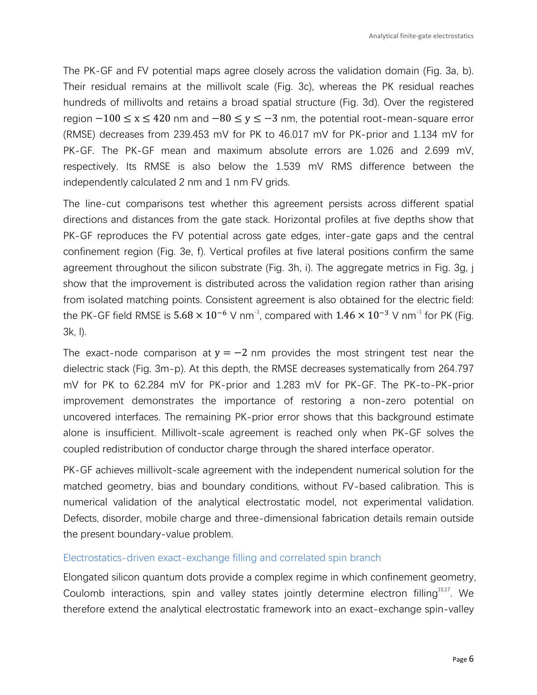
<figcaption class="paper-figure-caption"><b>Fig 5.</b> Low-resolution page preview, page 6</figcaption>
</figure>
</div>

<p><strong>Summary.</strong> The paper presents an integrated theoretical framework connecting the electrostatics of complex CMOS quantum devices to their correlated electronic structure. By developing the accurate PK-GF model, the authors can calculate the confinement potential and then use advanced many-body techniques (UHF/CASCI) to predict spin filling and charge localization in silicon quantum dots. This establishes a vital tool for designing next-generation solid-state qubits.</p>
<p><strong>Why it may be interesting.</strong> This work is highly relevant as it bridges solid-state device physics (CMOS lithography) directly into advanced quantum many-body theory, providing a crucial, auditable computational pipeline for designing qubits based on semiconductor platforms.</p>
<details>
<summary>Detailed structure</summary>
<p><strong>Main problem.</strong> The primary goal is developing a unified, end-to-end modeling framework that connects lithographic CMOS gate geometry electrostatics to the resulting many-electron spin and charge filling in quantum dots.</p>
<p><strong>Main result.</strong> The authors successfully developed the Poisson-kernel coupled-interface Green-function (PK-GF) model, which accurately predicts device electrostatics at millivolt scales. Furthermore, they showed that the system operates in an interaction-dominated, Wigner-molecule-like regime, supporting low-spin ground states consistent with experiments.</p>
<p><strong>Method.</strong> The methodology combines advanced analytical electrostatics (PK-GF) to determine the confinement potential, which is then fed into correlated many-body quantum calculations using Unrestricted Hartree-Fock (UHF) and Complete Active-Space Configuration Interaction (CASCI).</p>
<p><strong>Model / system.</strong> The system modeled is an asymmetric multi-gate silicon quantum dot fabricated within a CMOS architecture. The Hamiltonian incorporates Coulomb interactions, spin, and valley degrees of freedom, treating the gate potential as derived directly from device electrostatics.</p>
<p><strong>Key observables.</strong> Spin density maps, charge localization (Wigner-molecule tendencies), ground state spin ($S=0$ support), addition energy spectrum, and the interaction-to-level-spacing ratio ($R$).</p>
<p><strong>Important parameters / regimes.</strong> Electron number ($N = 2-17$), magnetic field ($B = 5 	ext{ T}$), and electrostatic potential derived from gate voltages.</p>
<p><strong>Assumptions / limitations.</strong> The PK-GF model assumes a specific coupling between interfaces, and while UHF is used for calculation, the authors note it may overestimate spin polarization compared to CASCI results. The convergence of the singlet-triplet gap is noted as potentially incomplete.</p>
<p><strong>Figures summary.</strong> Figures compare the analytical PK-GF potential against independent Finite Volume (FV) solutions at millivolt scales; they also show charge density lobe profiles, pair correlation functions, and energy level comparisons between UHF and CASCI for different electron numbers.</p>
<p><strong>Paper structure.</strong> The paper first establishes the electrostatics by introducing and validating the PK-GF model against FV solvers. It then passes this derived potential into a spin-valley many-body calculation using UHF/CASCI to determine correlated electronic properties, culminating in an end-to-end workflow demonstration.</p>
</details>
<details>
<summary>Abstract</summary>
<p>In advanced complementary metal-oxide-semiconductor (CMOS) quantum chips, compact gate stacks make it difficult to connect lithographic geometry, electrostatic confinement and many-electron spin filling in one transparent model. This connection is central to design-technology co-optimization (DTCO). Here we develop a reduced-order analytical framework for asymmetric multigate silicon quantum-dot devices. Its electrostatic core, the Poisson-kernel coupled-interface Green-function (PK-GF) model, agrees with an independent finite-volume solution at the millivolt scale for the matched two-dimensional problem, without fitting to that solution. We then pass the gate-derived confinement, rather than a harmonic or fitted potential, to a spin-valley many-body calculation for a jellybean quantum dot with N = 2-17 electrons at B = 5 T. The unrestricted Hartree-Fock (UHF) solution supports occupation-dependent, Wigner-molecule-like charge localization but likely overestimates spin polarization. Complete active-space configuration interaction (CASCI) supports a low-spin branch within the tested active spaces, which aligns with the experiments. The workflow therefore connects CMOS layout, device electrostatics, and potential-determined quantum observables, providing an auditable modelling layer for CMOS-based qubit design and DTCO.</p>
</details>
<p><sub><a href="#top">↑ back to top</a></sub></p>

<p><a id="paper-2607.03909"></a></p>
<h3 id="algebra-of-quantum-mechanics-textitvia-classical-phonons-ii-klein-gordon-dynamics-the-heisenberg-formalism-the-dirac-canonical-commutation-rule-and-the-poincare-algebra-through-the-continuous-poisson-bracket-formalism"><a href="http://arxiv.org/abs/2607.03909v1">Algebra of quantum mechanics \textit{via} classical phonons. II: Klein-Gordon dynamics, the Heisenberg formalism, the Dirac canonical commutation rule and the Poincaré algebra through the continuous Poisson bracket formalism</a></h3>
<p><strong>Authors:</strong> Emmanuel Giner<br>
<strong>Type:</strong> theory · <strong>Category:</strong> other · <strong>PDF:</strong> <a href="https://arxiv.org/pdf/2607.03909v1">https://arxiv.org/pdf/2607.03909v1</a><br>
<strong>Analysis basis:</strong> full PDF text, analyzed in chunks
<strong>Topic relevance:</strong> <code>Frenkel-Kontorova</code> <strong>3/5</strong> · <code>Keldysh / 2PI / non-Gaussian methods</code> <strong>1/5</strong></p>
<div class="figure-strip-hint">↔ Scroll figures horizontally</div>
<div class="paper-figures-scroll">
<figure class="paper-figure-card">
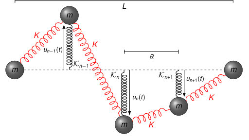
<figcaption class="paper-figure-caption"><b>Fig 1.</b> FIG. 1. Pictorial representation of the Frenkel-Kontorova model used here: un(t) is the real number representing the transverse displacement, Kn the ”on-site” harmonic force and K the ”between-site” harmonic force.</figcaption>
</figure>
</div>

<p><strong>Summary.</strong> This paper develops a rigorous mathematical framework to derive the core structures of quantum mechanics—including Klein-Gordon dynamics and Poincaré symmetry—entirely from a classical phonon model using Poisson brackets. It achieves this by demonstrating that a specific complex change of variables maps classical Poisson brackets directly onto fundamental quantum commutators, establishing deep formal equivalence between classical and quantum descriptions.</p>
<p><strong>Why it may be interesting.</strong> This work provides a highly abstract and fundamental theoretical bridge between classical Hamiltonian mechanics (Poisson brackets) and quantum field theory (commutators), which is valuable for understanding quantization procedures beyond standard canonical methods.</p>
<details>
<summary>Detailed structure</summary>
<p><strong>Main problem.</strong> The primary goal is to derive the full algebra of quantum mechanics, including Klein-Gordon dynamics and the Poincaré group structure, starting purely from a classical framework.</p>
<p><strong>Main result.</strong> The paper establishes a strict mathematical equivalence between the Heisenberg formalism (quantum commutators) and the continuous Poisson bracket formalism by utilizing a non-local complex change of variables.</p>
<p><strong>Method.</strong> It employs the classical phonon model to define continuous Poisson brackets, which are then systematically related to quantum commutators via functional analysis and canonical quantization procedures.</p>
<p><strong>Model / system.</strong> The system is modeled using a classical phonon lattice (related to the Frenkel-Kontorova model) whose continuum limit yields dynamics governed by equations leading to the Klein-Gordon equation. The formalism progresses from real-valued classical observables to complex quantum operators.</p>
<p><strong>Key observables.</strong> Klein-Gordon fields, Poisson brackets $\{F, G\}$, commutators $[\hat{O}_F, \hat{O}_G]$, and Poincaré group generators ($H, X, P$).</p>
<p><strong>Important parameters / regimes.</strong> The continuum limit parameters (e.g., $N	o\infty, a	o 0$) and the scaling factors used to connect classical variables to quantum operators are crucial.</p>
<p><strong>Assumptions / limitations.</strong> The derivation relies on assuming that a non-local complex change of variables can bridge the gap between real-valued classical dynamics and complex quantum field theory structures.</p>
<p><strong>Figures summary.</strong> Figures illustrate the physical lattice model (Frenkel-Kontorova) and later show abstract mathematical representations of group transformations using matrix forms for the Poincaré algebra generators.</p>
<p><strong>Paper structure.</strong> The paper follows a progression: first establishing classical dynamics via phonons; then introducing Poisson brackets to derive Ehrenfest relations; next, performing a complex change of variables to link $\{., .\}$ to $[\cdot, \cdot]$; finally, applying this structure to recover the full Poincaré algebra in 1+1 dimensions.</p>
</details>
<details>
<summary>Abstract</summary>
<p>In the first part of this series we have shown how the Schrodinger equation for a single particle and the corresponding non relativistic quantum observables can be obtained from a purely classical phonon model through the Newtonian equations of motion. In this work we focus instead on how the classical Hamiltonian formalism applied to the same phonon system allows to recover the feature of relativistic quantum mechanics for a single spinless particle. Using the classical nature of the phonon model, we naturally define continuous Poisson brackets between classical observables, which allows to recover the dynamics of such observables, i.e. the Ehrenfest relations associated to real-valued Klein-Gordon fields. The Poisson brackets also permits to obtain the generic form of constants of motions, thus generalizing the concept of inner products and momentum on Klein-Gordon fields. We then connect the formalism of real-valued classical functionals with that of hermitian operators and complex-valued wave functions. This is done through the introduction of a non-local complex-valued change of variables which allows to rewrite the real-valued Klein-Gordon equation in a form akin to the Schrodinger equation, and the classical observables as quantum expectation values. Then, we show how this change of variables allows to rewrite the classical Poisson brackets as commutators of hermitian operators. This points out the strict equivalence between the Heisenberg formalism and the formalism of classical Poisson bracket. Eventually, we illustrate how the Poisson brackets allows to recover the transformations of Poincaré group in 1+1 dimension together with its algebra. The latter makes the link between the Lorentz invariant inner product of Mostafazadeh and the Casimir invariant associated to the mass of particle.</p>
</details>
<p><sub><a href="#top">↑ back to top</a></sub></p>

<p><a id="paper-2607.03902"></a></p>
<h3 id="experimental-signatures-of-bosonic-pairing-in-a-two-component-bose-gas"><a href="http://arxiv.org/abs/2607.03902v1">Experimental signatures of bosonic pairing in a two-component Bose gas</a></h3>
<p><strong>Authors:</strong> Omar Almonajed, M. Iskin, M. Ö. Oktel<br>
<strong>Type:</strong> theory · <strong>Category:</strong> quantum gases · <strong>PDF:</strong> <a href="https://arxiv.org/pdf/2607.03902v1">https://arxiv.org/pdf/2607.03902v1</a><br>
<strong>Analysis basis:</strong> full PDF text, analyzed in chunks
<strong>Topic relevance:</strong> <code>analog quantum simulation</code> <strong>3/5</strong> · <code>Keldysh / 2PI / non-Gaussian methods</code> <strong>1/5</strong></p>
<div class="figure-strip-hint">↔ Scroll figures horizontally</div>
<div class="paper-figures-scroll">
<figure class="paper-figure-card">
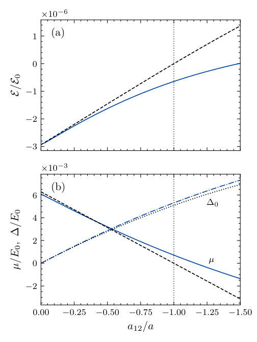
<figcaption class="paper-figure-caption"><b>Fig 1.</b> FIG. 1. (a) Grand-potential density as a function of the interaction-strength ratio a12/a, spanning the attrac- tive mean-field-stable regime and extending into the droplet regime. The blue solid curve denotes bosonic pairing the- ory, and the black dashed curve denotes Bogoliubov theory. Values in panel (a) are measured in units of E0 = ℏ2/(ma5). (b) Chemical potential µ and pairing field ∆0 as functions of a12/a across the mean-field-to-droplet crossover. The blue solid and blue dash-dotted curves denote µ and ∆0 in bosonic pairing theory, respectively, while the black dashed and black dotted curves denote the corresponding Bogoli- ubov results. Values in panel (b) are measured in units...</figcaption>
</figure>
<figure class="paper-figure-card">
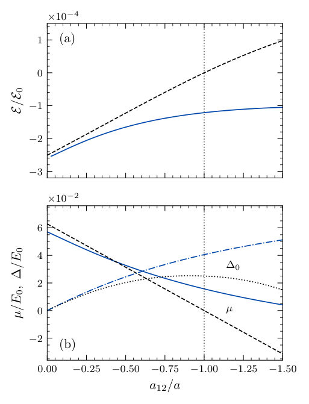
<figcaption class="paper-figure-caption"><b>Fig 2.</b> FIG. 2. Same as Fig. 1, but for a tenfold higher density. In both panels, the per-species density is fixed at na3 = 0.5 × 10−2. The differences between the Bogoliubov and bosonic pairing theories become more pronounced at higher density, particularly in the droplet regime.</figcaption>
</figure>
<figure class="paper-figure-card">
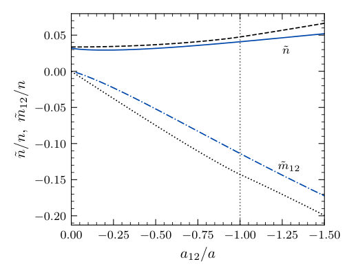
<figcaption class="paper-figure-caption"><b>Fig 3.</b> FIG. 3. Intraspecies normal fraction ˜n/n and interspecies anomalous fraction ˜m12/n as functions of the interaction- strength ratio a12/a, spanning the attractive mean-field- stable regime and extending into the droplet regime. The blue solid and black dashed curves denote ˜n/n in bosonic pairing theory and Bogoliubov theory, respectively. The blue dash-dotted and black dotted curves denote the correspond- ing results for ˜m12/n. The per-species density is fixed at na3 = 0.5 × 10−3.</figcaption>
</figure>
<figure class="paper-figure-card">
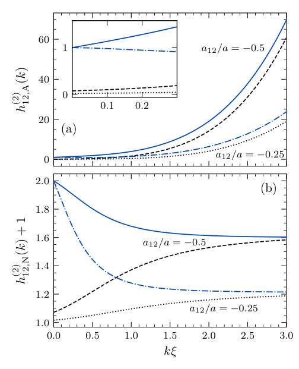
<figcaption class="paper-figure-caption"><b>Fig 4.</b> FIG. 4. Momentum-space interspecies correlations for a symmetric two-component bosonic gas at fixed density na3 = 0.5 × 10−3 in the mean-field-stable regime. (a) Normalized anomalous correlation h(2) 12,A(k). (b) Normalized normal cor-</figcaption>
</figure>
<figure class="paper-figure-card">

<figcaption class="paper-figure-caption"><b>Fig 5.</b> FIG. 5. Ultraviolet-renormalized interspecies two-body correlation function G(2) 12 (r) for a symmetric two-component bosonic gas. (a) Real-space dependence at fixed density na3 = 0.5 × 10−3 and interaction ratio a12/a = −0.5, cor- responding to the attractive mean-field-stable regime. Both theories approach the uncorrelated limit at large separations but differ at short distances. (b) Short-distance limit G(2) 12 (0) across the gas-to-droplet crossover. The vertical dotted line marks the mean-field instability, a12/a = −1, which coincides with the droplet transition. Blue solid curves denote bosonic pairing theory, and black dashed curves denote Bogoliubov theory. In the droplet regime,...</figcaption>
</figure>
</div>

<p><strong>Summary.</strong> The paper compares bosonic pairing theory against standard Bogoliubov theory for two-component Bose gases approaching the droplet regime. By analyzing observables like the grand potential and static structure factors, the authors show that bosonic pairing predicts distinct correlation signatures not captured by Bogoliubov theory. This suggests that low-momentum measurements in trapped atomic systems can experimentally validate alternative microscopic descriptions of quantum matter.</p>
<p><strong>Why it may be interesting.</strong> This work provides a rigorous theoretical tool to distinguish between competing descriptions of quantum many-body physics near phase transitions, offering concrete predictions for experimental measurements like Bragg spectroscopy on ultracold atomic gases.</p>
<details>
<summary>Detailed structure</summary>
<p><strong>Main problem.</strong> The paper compares two theoretical frameworks, Bogoliubov theory and bosonic pairing theory, to describe two-component Bose gases across the crossover from a weakly interacting gas to the droplet regime.</p>
<p><strong>Main result.</strong> Bosonic pairing theory predicts lower grand potentials and distinct correlation signatures—such as enhanced low-momentum interspecies correlations—compared to Bogoliubov theory. These differences suggest that structure factor measurements can experimentally distinguish between the two descriptions.</p>
<p><strong>Method.</strong> The authors reformulate bosonic pairing theory using an operator formalism and compare its predictions for various observables against those derived from standard Bogoliubov mean-field theory, including fluctuation corrections.</p>
<p><strong>Model / system.</strong> The system is a homogeneous binary Bose mixture with tunable interactions. The comparison focuses on how the theories handle quantum fluctuations when attractive interspecies interactions lead to droplet formation.</p>
<p><strong>Key observables.</strong> Grand potential ($\Omega$), excitation spectrum, species-resolved static structure factors ($S_{ij}(q)$), and two-body correlation functions ($G^{(2)}_{12}(r)$).</p>
<p><strong>Important parameters / regimes.</strong> Interaction strengths (especially attractive interspecies coupling $g_{12}$), particle density, and momentum transfer ($q$).</p>
<p><strong>Assumptions / limitations.</strong> Bogoliubov theory is compared to bosonic pairing theory in regimes where both possess real excitation spectra. The comparison highlights the limitations of Bogoliubov theory when dealing with spectral instabilities (soft modes).</p>
<p><strong>Figures summary.</strong> Figures illustrate $G^{(2)}_{12}(r)$ showing differences in antibunching, and species-resolved static structure factors $S_{ij}(q)$, which show a measurable contrast ratio between the two theories at low momentum.</p>
<p><strong>Paper structure.</strong> The paper systematically compares the theoretical frameworks by deriving key quantities (like the grand potential and correlation functions) using both methods, culminating in a direct comparison of observable signatures across the gas-to-droplet crossover.</p>
</details>
<details>
<summary>Abstract</summary>
<p>Two-component bosonic droplets are commonly described within Bogoliubov theory, where beyond-mean-field quantum fluctuations stabilize the system against mean-field collapse. In the interaction regime where droplets form, however, the Bogoliubov excitation spectrum contains an imaginary branch associated with the underlying instability, which is typically omitted when evaluating the beyond-mean-field energy. Bosonic pairing theory provides an alternative description with a fully real excitation spectrum. In this work, we reformulate bosonic pairing theory within an operator formalism, making its underlying approximations transparent, and compare its predictions with those of Bogoliubov theory for a homonuclear binary Bose mixture across the crossover from a weakly interacting gas to the droplet regime. Working at fixed particle density, we determine the variational parameters of bosonic pairing theory self-consistently and focus on the regime in which both theories possess real excitation spectra, allowing a direct comparison. We find that bosonic pairing theory yields a lower grand potential than Bogoliubov theory and predicts qualitatively distinct correlation signatures, including enhanced long-wavelength interspecies momentum-space correlations and a finite density static structure factor at experimentally accessible low momenta. These differences persist over a broad range of interaction strengths and suggest that correlation and structure-factor measurements can provide direct experimental tests of bosonic pairing across the gas-to-droplet crossover.</p>
</details>
<p><sub><a href="#top">↑ back to top</a></sub></p>

<p><a id="paper-2607.04979"></a></p>
<h3 id="extending-the-bloch-sphere-model-to-an-n-qubit-system"><a href="http://arxiv.org/abs/2607.04979v1">Extending the Bloch sphere model to an N-qubit system</a></h3>
<p><strong>Authors:</strong> Francisco Piñero, Cristian Franco, Hernán I. de la Cruz, Fernando L. Pelayo, Vicente Pascual, Mauro Mezzini, Jose Javier Paulet, Fernando Cuartero<br>
<strong>Type:</strong> theory · <strong>Category:</strong> quantum information and computing · <strong>PDF:</strong> <a href="https://arxiv.org/pdf/2607.04979v1">https://arxiv.org/pdf/2607.04979v1</a><br>
<strong>Analysis basis:</strong> full PDF text, analyzed in chunks
<strong>Topic relevance:</strong> <code>entanglement &amp; information structure</code> <strong>3/5</strong></p>
<div class="figure-strip-hint">↔ Scroll figures horizontally</div>
<div class="paper-figures-scroll">
<figure class="paper-figure-card">

<figcaption class="paper-figure-caption"><b>Fig 1.</b> Figure 1: State of a single qubit represented on the Bloch sphere.</figcaption>
</figure>
<figure class="paper-figure-card">
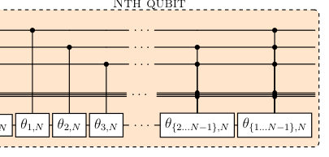
<figcaption class="paper-figure-caption"><b>Fig 2.</b> Figure 3: State creation circuit.</figcaption>
</figure>
<figure class="paper-figure-card">

<figcaption class="paper-figure-caption"><b>Fig 3.</b> Figure 4: State decodification circuit.</figcaption>
</figure>
</div>

<p><strong>Summary.</strong> This paper introduces a novel geometric framework to represent N-qubit quantum states by extending the Bloch sphere concept into 2N-1 interconnected spheres. It rigorously proves that this model provides a unique, bijective parameterization for any pure multi-qubit state. This offers an intuitive visualization and computational structure for analyzing entanglement in complex quantum systems.</p>
<p><strong>Why it may be interesting.</strong> This work provides a powerful geometric visualization tool for high-dimensional quantum states, which is crucial for understanding and designing complex multi-qubit quantum circuits and analyzing entanglement structure in theoretical models.</p>
<details>
<summary>Detailed structure</summary>
<p><strong>Main problem.</strong> The primary challenge addressed is the lack of a widely accepted, intuitive geometric model to represent multi-qubit quantum states that incorporate entanglement, extending beyond the single-qubit Bloch sphere.</p>
<p><strong>Main result.</strong> The authors propose and prove a novel framework showing that an arbitrary N-qubit pure state can be uniquely parameterized using exactly 2N-1 spheres, providing a strict bijection to the standard state vector representation.</p>
<p><strong>Method.</strong> The methodology involves generalizing the geometric concept of the Bloch sphere by deriving parameterizations for two and three qubits based on controlled rotation gates. This leads to establishing a unique normal form for the state vector through sequential phase elimination and amplitude setting using unitary transformations.</p>
<p><strong>Model / system.</strong> The system under study is an N-qubit quantum state, $|	ext{Q}
angle$, whose representation is mapped onto a geometric structure involving multiple interconnected spheres. The parameterization is derived by analyzing how controlled rotations affect the complex amplitudes of the basis states.</p>
<p><strong>Key observables.</strong> The primary observables are the angular parameters defining the $2N-1$ spheres, which encode both individual qubit states and various levels of entanglement (bipartite, etc.).</p>
<p><strong>Important parameters / regimes.</strong> The number of qubits ($N$), and specific angles ($  heta, \varphi$) associated with single-qubit rotations and controlled gates.</p>
<p><strong>Assumptions / limitations.</strong> The derivation relies on the assumption that a unique normal form exists for the state vector, which is achieved by constructing a unitary transformation $U$ composed of sequential controlled rotations ($T=U_y U_z$).</p>
<p><strong>Figures summary.</strong> Figure 1 illustrates the Bloch sphere for a single qubit. The notes also reference tables detailing parameters and phase evolution for two- and three-qubit systems during algorithmic transformations.</p>
<p><strong>Paper structure.</strong> The paper progresses by first establishing the concept for single qubits, then deriving explicit parameterizations for two qubits using three spheres. It systematically extends this to N-qubits by developing algorithms (Algorithm 1 &amp; 2) that use controlled rotations to transform any state into a canonical form, thereby proving the general $2N-1$ sphere model.</p>
</details>
<details>
<summary>Abstract</summary>
<p>The Bloch sphere is an elegant tool for representing single-qubit states. However, a widely accepted generalization for multi-qubit systems with entanglement remains absent. We propose a novel geometric model extending the Bloch sphere representation to arbitrary $N$-qubit systems using $2^N-1$ spheres. We demonstrate that any pure 2-qubit state is uniquely described by three spheres: two for individual qubits and a third encapsulating bipartite entanglement. Generalizing this, we establish an $N$-qubit parameterization through the hierarchical application of controlled rotation gates along the $Z$ and $Y$ axes. We formally prove a strict bijection between the standard state vector representation and our model's angular parameters. This framework provides an intuitive visualization of multiple entanglement, offering potential computational advantages for quantum simulators and new analytical perspectives on quantum gates.</p>
</details>
<p><sub><a href="#top">↑ back to top</a></sub></p>

<p><a id="paper-2607.04186"></a></p>
<h3 id="analytic-properties-of-cross-click-operators-in-passive-multi-basis-photodetection-monotonicity-exact-convergence-rates-and-dimension-reduction-for-quantum-key-distribution"><a href="http://arxiv.org/abs/2607.04186v1">Analytic properties of cross-click operators in passive multi-basis photodetection: monotonicity, exact convergence rates, and dimension reduction for quantum key distribution</a></h3>
<p><strong>Authors:</strong> Zhangdong Ye<br>
<strong>Type:</strong> theory · <strong>Category:</strong> quantum information and computing · <strong>PDF:</strong> <a href="https://arxiv.org/pdf/2607.04186v1">https://arxiv.org/pdf/2607.04186v1</a><br>
<strong>Analysis basis:</strong> full PDF text, analyzed in chunks
<strong>Topic relevance:</strong> <code>quantum measurements</code> <strong>2/5</strong> · <code>Keldysh / 2PI / non-Gaussian methods</code> <strong>1/5</strong> · <code>correlated / nonlocal dissipation</code> <strong>1/5</strong> · <code>driven-dissipative phase transition</code> <strong>1/5</strong> · <code>entanglement &amp; information structure</code> <strong>1/5</strong> · <code>interference shaping light</code> <strong>1/5</strong> · <code>methods for driven-dissipative</code> <strong>1/5</strong></p>
<div class="figure-strip-hint">↔ Scroll figures horizontally</div>
<div class="paper-figures-scroll">
<figure class="paper-figure-card">

<figcaption class="paper-figure-caption"><b>Fig 1.</b> FIG. 2. (a) Minimum eigenvalue f (n) of the cross-click operator of the balanced passive six-state analyzer on the n-photon sector, for several detector-efficiency configurations, computed exactly by the symmetric-power algorithm of Sec. V. All curves are monotone, as guaranteed by Theorem 1; for ideal detectors the curve is exactly f (n) = 1 −31−n (Corollary 1). (b) Convergence 1−f (n) for the strongly mismatched configuration ⃗η = (0.9, 0.75, 1.0, 0.6, 0.85, 0.7) on a logarithmic scale, together with the two-sided bounds of Theorem 2. The exact values are squeezed between maxb∥Ab∥n and P</figcaption>
</figure>
<figure class="paper-figure-card">
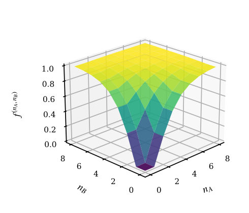
<figcaption class="paper-figure-caption"><b>Fig 2.</b> FIG. 3. Joint minimum eigenvalue f (nA,nB) for two different mismatched six-state analyzers, evaluated from the exact fac- torization of Theorem 3, 1−f (nA,nB) = (1−f (nA) A )(1−f (nB) B ). The surface reproduces the structure obtained by direct nu- merical diagonalization in Ref. [25], including the exact coin- cidence of the nB = 0 and nB = 1 slices.</figcaption>
</figure>
</div>

<p><strong>Summary.</strong> This paper analytically characterizes cross-click operators used in analyzing photodetection processes for quantum key distribution. By showing these operators are related to symmetric tensor powers, the authors derive exact formulas for spectral properties like monotonicity and convergence rates. This breakthrough replaces complex Fock-space numerics with general, closed-form bounds essential for rigorous QKD security proofs.</p>
<p><strong>Why it may be interesting.</strong> It provides rigorous analytical tools to quantify security loopholes in QKD protocols caused by detector imperfections, moving beyond computationally intensive numerical simulations into closed-form physics.</p>
<details>
<summary>Detailed structure</summary>
<p><strong>Main problem.</strong> To provide a sharp analytic characterization of the spectral behavior of cross-click operators in passive multi-basis photodetection for Quantum Key Distribution (QKD) security proofs.</p>
<p><strong>Main result.</strong> The work establishes monotonicity, two-sided exponential bounds, and exact factorization formulas for these operators, replacing finite-sector numerical calculations with closed-form analytical results.</p>
<p><strong>Method.</strong> The analysis leverages the structural property that silence operators are second quantizations of explicit single-photon contractions, allowing properties to be derived from tensor algebra and operator inequalities.</p>
<p><strong>Model / system.</strong> The system models passive linear-optical analyzers using threshold single-photon detectors, applicable to polarization, time-bin, or spatial-mode qubits in QKD setups.</p>
<p><strong>Key observables.</strong> The minimum eigenvalue of the cross-click operator on the n-photon subspace, $f^{(n)}$, and related quantities like $1 - f(n)$ for the no-cross-click operator.</p>
<p><strong>Important parameters / regimes.</strong> Detector efficiencies ($\eta_d$), dark-count probabilities ($\epsilon_d$), and the photon number ($n$).</p>
<p><strong>Assumptions / limitations.</strong> The results hold for arbitrary passive analyzers with specified parameters, assuming independent dark counts and uncorrelated efficiencies; afterpulsing breaks the product structure.</p>
<p><strong>Figures summary.</strong> Figures illustrate a running example (six-state polarization analyzer) showing cross-click probability $f(n)$ versus photon number, tracking the closed-form convergence rate $\max_b \|A_b\|$, and visualizing joint operator factorization $f(n_A, n_B)$.</p>
<p><strong>Paper structure.</strong> The paper develops its findings by first establishing the structural lemma for silence operators, then proving monotonicity (Theorem 1), deriving two-sided exponential bounds (Theorem 2) to find the exact convergence rate, and finally presenting special cases like ideal detectors and joint operator factorization.</p>
</details>
<details>
<summary>Abstract</summary>
<p>Cross-click operators, the POVM elements for simultaneous clicks in detectors assigned to different measurement bases, are used in QKD and entanglement-verification analyses with realistic threshold detectors to bound multiphoton contributions. Earlier applications verified the needed growth of the minimum eigenvalue $f^{(n)}$ on the $n$-photon subspace only numerically over finite sectors. This work gives an analytic characterization for passive linear-optical analyzers with arbitrary efficiency mismatch and dark counts. The key observation is that every silence operator is the second quantization $Γ(A)$ of an explicit single-photon contraction $A$, whose $n$-photon restriction is $A^{\otimes n}$ on $\mathrm{Sym}^n$. This yields: (i) monotonicity $f^{(n+1)}\ge f^{(n)}$; (ii) two-sided exponential bounds $\max_b γ_b|A_b|^n \le 1-f^{(n)} \le \sum_b γ_b|A_b|^n$, which determine the exact asymptotic convergence rate from single-photon spectral data; (iii) for ideal detectors and $n\ge1$, the exact formula $f^{(n)}=1-\sum_b p_b^n$; and (iv) an exact factorization $1-f^{(n_A,n_B)}=(1-f_A^{(n_A)})(1-f_B^{(n_B)})$ for the two-party cross-click operator. The results apply to polarization, time-bin, and spatial-mode analyzers within the stated threshold-detector model. As an application, we obtain closed-form photon-number weight bounds used in detection-efficiency-mismatch analyses, replacing finite-sector Fock-space numerics by formulas valid for all photon numbers.</p>
</details>
<p><sub><a href="#top">↑ back to top</a></sub></p>

<p><a id="paper-2607.03579"></a></p>
<h3 id="device-independent-quantum-key-distribution-in-the-commuting-operator-framework"><a href="http://arxiv.org/abs/2607.03579v1">Device-independent Quantum Key Distribution in the commuting operator framework</a></h3>
<p><strong>Authors:</strong> Gereon Koßmann, René Schwonnek, Po-Chieh Liu, Hao-Chung Cheng<br>
<strong>Type:</strong> theory · <strong>Category:</strong> quantum information and computing · <strong>PDF:</strong> <a href="https://arxiv.org/pdf/2607.03579v1">https://arxiv.org/pdf/2607.03579v1</a><br>
<strong>Analysis basis:</strong> full PDF text, analyzed in chunks
<strong>Topic relevance:</strong> <code>entanglement &amp; information structure</code> <strong>2/5</strong> · <code>quantum measurements</code> <strong>2/5</strong> · <code>Keldysh / 2PI / non-Gaussian methods</code> <strong>1/5</strong> · <code>correlated / nonlocal dissipation</code> <strong>1/5</strong> · <code>driven-dissipative phase transition</code> <strong>1/5</strong> · <code>methods for driven-dissipative</code> <strong>1/5</strong></p>
<div class="figure-strip-hint">↔ Scroll figures horizontally</div>
<div class="paper-figures-scroll">
<figure class="paper-figure-card">
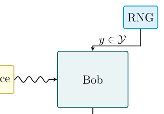
<figcaption class="paper-figure-caption"><b>Fig 1.</b> Figure 1. The figure illustrates a device-independent quantum key distribution (DIQKD) experiment. In contrast to the quantum game depicted in Figure 2, the referee is replaced by local random number generators (RNGs), one on each side. While sharing a quantum state ρAB, Alice and Bob use their respective RNGs to draw private and local random inputs, feed them into their devices, and collect the resulting output statistics.</figcaption>
</figure>
<figure class="paper-figure-card">
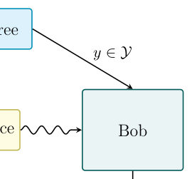
<figcaption class="paper-figure-caption"><b>Fig 2.</b> Figure 2. The figure illustrates a non-local quantum game. A source prepares a bipartite state ρAB and distributes it between Alice and Bob. Following a predetermined strategy, specified by the shared state together with their local measurements, Alice and Bob receive questions x ∈X and y ∈Y from a referee, feed them as inputs into their respective devices, and respond with the outcomes a ∈A and b ∈B produced by their local boxes.</figcaption>
</figure>
</div>

<p><strong>Summary.</strong> This paper establishes a highly general mathematical framework for analyzing Device-Independent Quantum Key Distribution (DIQKD) using commuting operators. It overcomes limitations in previous work by employing advanced tools from operator algebras to handle arbitrary environments. The result provides rigorous security bounds by casting the key rate calculation into a solvable Non-Commutative Polynomial Optimization problem.</p>
<p><strong>Why it may be interesting.</strong> It pushes the boundaries of quantum information theory by providing security proofs that are robust against uncharacterized devices and complex environmental interactions, which is crucial for realizing practical quantum technologies.</p>
<details>
<summary>Detailed structure</summary>
<p><strong>Main problem.</strong> To develop a maximally general mathematical framework for analyzing Device-Independent Quantum Key Distribution (DIQKD) security that avoids restrictive assumptions on the underlying Hilbert space structure.</p>
<p><strong>Main result.</strong> The authors provide a representation-independent route to derive AEP-based security statements by utilizing the commuting operator framework, proving key results like the projectivity of measurements w.l.o.g.</p>
<p><strong>Method.</strong> The work employs advanced tools from operator algebras (C*-algebras, von Neumann algebras) and casts the key rate computation as a Non-Commutative Polynomial Optimization (NPO) problem solvable via the NPA hierarchy.</p>
<p><strong>Model / system.</strong> The system is DIQKD involving two parties (Alice and Bob). The mathematical model uses universal C*-algebras to represent local measurements, allowing for rigorous analysis of security even when Eve's side information requires general von Neumann algebras.</p>
<p><strong>Key observables.</strong> Key rates, conditional von Neumann entropy, observed input-output statistics ($
ho_{AB}$)</p>
<p><strong>Important parameters / regimes.</strong> The framework is designed to be general regarding the structure of the underlying Hilbert space and environment description (e.g., type-III algebra for Eve).</p>
<p><strong>Assumptions / limitations.</strong> It addresses and overcomes limitations in existing proofs that rely on specific tensor product structures or assume measurements are always projective.</p>
<p><strong>Figures summary.</strong> Figure 1 illustrates the general DIQKD experimental setup involving local Random Number Generators (RNGs) used by Alice and Bob to generate output statistics.</p>
<p><strong>Paper structure.</strong> The paper builds from reviewing necessary algebraic concepts (C*-algebras, states, traces) before detailing the DIQKD formulation in Section 5. It introduces technical tools like generalized relative entropy formulas for von Neumann algebras and applies these to the NPO problem.</p>
</details>
<details>
<summary>Abstract</summary>
<p>Device-independent quantum key distribution (DIQKD) is arguably the gold standard for secure quantum communication, as it aims to rely only on observed input-output statistics of an uncharacterized device which is only assumption to obey the laws of quantum physics. A corresponding security analysis hence demands a description of a quantum experiment from a most general perspective. Under close inspection, existing proof techniques do not always meet this goal as they tend to rely on subtile assumptions on a tensor product structure of the underlying Hilbert space and a 'hidden but finite' dimensionality. In this work, we collect the tools needed for a full analysis of DIQKD in the commuting operator framework, which avoids these subtilities and provides the arguably most general view on a quantum experiment. We rigorously proof the common assumption that in DIQKD measurements can be w.l.o.g. assumed to be projective. Furthermore, we show that task of computing key rates can be casted as a non-commutative polynomial optimization (NPO) problem to which the Navascués-Pironio-Acín (NPA) hierarchy gives a correct and converging relaxation.   As a tool, we generalize the integral representation for the relative entropy by Frenkel [Quantum 7, 1102 (2023)] to general von Neumann algebras and apply techniques from Kossmann and Schwonnek [arXiv: 2411.04858] for the approximation in an NPO program.</p>
</details>
<p><sub><a href="#top">↑ back to top</a></sub></p>

<p><a id="paper-2607.05218"></a></p>
<h3 id="quasi-holonomy-in-non-adiabatic-quantum-evolution"><a href="http://arxiv.org/abs/2607.05218v1">Quasi-holonomy in non-adiabatic quantum evolution</a></h3>
<p><strong>Authors:</strong> Erik Sjöqvist, Adam Fredriksson<br>
<strong>Type:</strong> theory · <strong>Category:</strong> other · <strong>PDF:</strong> <a href="https://arxiv.org/pdf/2607.05218v1">https://arxiv.org/pdf/2607.05218v1</a><br>
<strong>Analysis basis:</strong> full PDF text, analyzed in chunks
<strong>Topic relevance:</strong> <code>non-equilibrium dynamics</code> <strong>2/5</strong> · <code>Keldysh / 2PI / non-Gaussian methods</code> <strong>1/5</strong> · <code>correlated / nonlocal dissipation</code> <strong>1/5</strong> · <code>driven-dissipative phase transition</code> <strong>1/5</strong> · <code>entanglement &amp; information structure</code> <strong>1/5</strong> · <code>methods for driven-dissipative</code> <strong>1/5</strong> · <code>non-equilibrium universality</code> <strong>1/5</strong></p>
<div class="figure-strip-hint">↔ Scroll figures horizontally</div>
<div class="paper-figures-scroll">
<figure class="paper-figure-card">
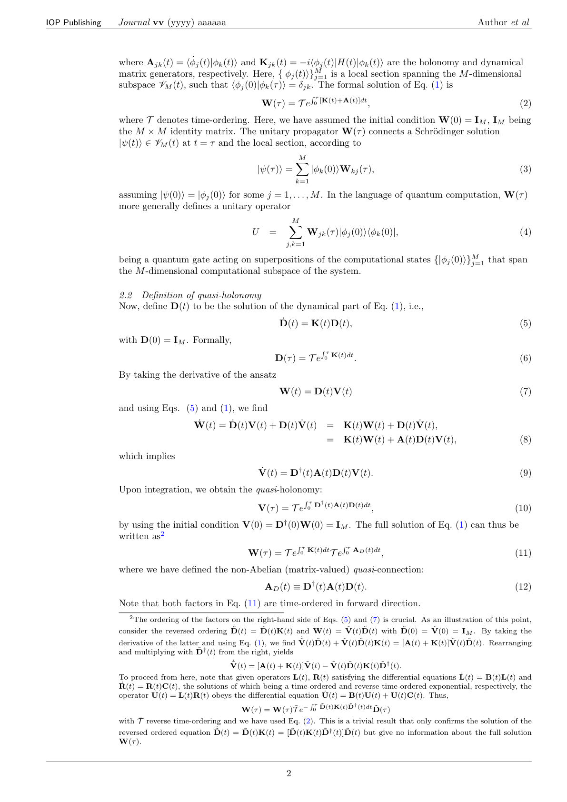
<figcaption class="paper-figure-caption"><b>Fig 1.</b> Low-resolution page preview, page 2</figcaption>
</figure>
<figure class="paper-figure-card">

<figcaption class="paper-figure-caption"><b>Fig 2.</b> Low-resolution page preview, page 3</figcaption>
</figure>
<figure class="paper-figure-card">
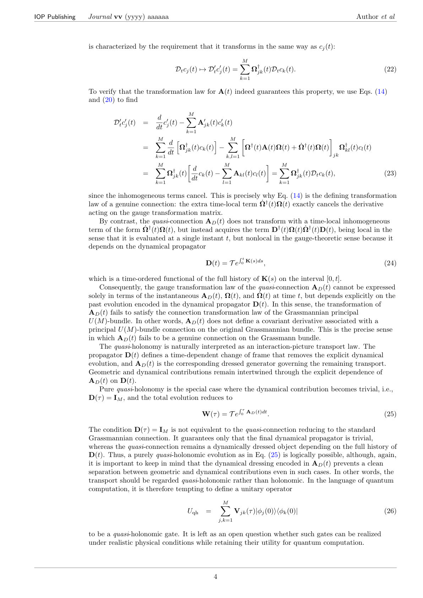
<figcaption class="paper-figure-caption"><b>Fig 3.</b> Low-resolution page preview, page 4</figcaption>
</figure>
<figure class="paper-figure-card">

<figcaption class="paper-figure-caption"><b>Fig 4.</b> Low-resolution page preview, page 5</figcaption>
</figure>
<figure class="paper-figure-card">
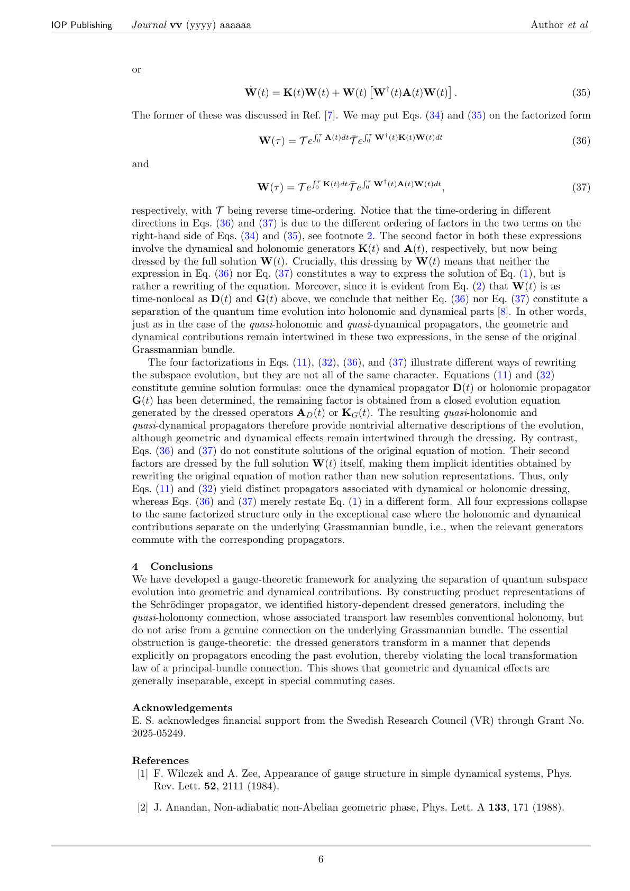
<figcaption class="paper-figure-caption"><b>Fig 5.</b> Low-resolution page preview, page 6</figcaption>
</figure>
</div>

<p><strong>Summary.</strong> This paper develops a framework to analyze how quantum subspaces evolve over time by factoring the Schrödinger equation into dynamical and geometric parts. The authors demonstrate that this separation fails because the resulting 'quasi-connection' retains a history-dependent term, proving that geometry and dynamics are fundamentally intertwined in this setting. This offers a deep gauge-theoretic understanding of non-adiabatic subspace evolution.</p>
<p><strong>Why it may be interesting.</strong> This work provides a rigorous geometric/gauge-theoretic perspective on open quantum systems dynamics, directly addressing the fundamental question of separability in time evolution that is crucial for understanding decoherence or adiabatic approximations.</p>
<details>
<summary>Detailed structure</summary>
<p><strong>Main problem.</strong> The central problem is investigating whether the quantum time evolution of subspaces can be cleanly separated into purely geometric (holonomic) and dynamical components.</p>
<p><strong>Main result.</strong> The authors show that this separation fails in general because the effective quasi-connection depends explicitly on the history of the dynamical propagator, indicating an inherent intertwining of geometric and dynamic effects.</p>
<p><strong>Method.</strong> They develop a framework by factoring the Schrödinger evolution into dynamical and connection-induced parts using a moving basis along paths in the complex Grassmannian.</p>
<p><strong>Model / system.</strong> The model concerns the time evolution of $M$-dimensional subspaces within an $N$-dimensional Hilbert space, mathematically described as paths on the complex Grassmannian $ ext{Gr}(N; M)$ governed by a matrix differential equation.</p>
<p><strong>Key observables.</strong> The quasi-connection $ ext{AD}(t)$, which is used to diagnose the failure of separation from standard connection forms.</p>
<p><strong>Important parameters / regimes.</strong> Cyclic evolution (loops) and the time dependence of the Hamiltonian/generators $K(t)$ and $A(t)$.</p>
<p><strong>Assumptions / limitations.</strong> The analysis relies on factoring the propagator using a moving basis, but the core limitation is the history-dependence of the resulting quasi-connection.</p>
<p><strong>Figures summary.</strong> Not specified by the notes.</p>
<p><strong>Paper structure.</strong> The paper introduces the problem via the Schrödinger equation factorization, derives the quasi-holonomy generator $    ext{AD}(t)$, proves it fails to be a true connection due to history dependence, and discusses conditions under which separation might occur (e.g., commutativity).</p>
</details>
<details>
<summary>Abstract</summary>
<p>We develop a framework for quasi-holonomy in non-adiabatic quantum time evolution of subspaces along loops in a complex Grassmannian. By factoring the Schrödinger evolution into dynamical and connection-induced contributions in a moving basis, we obtain an effective geometric generator that depends explicitly on the dynamical propagator. This quasi-connection does not define a genuine connection on the original Grassmann bundle, since its gauge transformation law acquires a history-dependent, nonlocal term. Other ways of factoring the Schrödinger evolution are briefly discussed. All these approaches suffer from the same type of history-dependence, thereby defining transport of subspaces in which geometric and dynamical effects are generally intertwined, just as in the case of the quasi-holonomy. Our work sheds light on the issue of separating quantum evolution of subspaces into holonomic and dynamical parts from an essentially gauge-theoretic perspective.</p>
</details>
<p><sub><a href="#top">↑ back to top</a></sub></p>

<p><a id="paper-2607.04693"></a></p>
<h3 id="supercritical-fluid-of-quantum-electrons-in-three-dimensional-superconducting-fullerides"><a href="http://arxiv.org/abs/2607.04693v1">Supercritical fluid of quantum electrons in three-dimensional superconducting fullerides</a></h3>
<p><strong>Authors:</strong> Xinying Li, Yuki Matsuda, Chongli Yang, Huaxue Zhou, Takuma Ogasawara, Qin Wang, Liguo Zhang, Hidekazu Shimotani, Hailiang Xia, Khuong K. Huynh, Panagiotis Kotetes, Satoshi Heguri, Katsumi Tanigaki<br>
<strong>Type:</strong> both · <strong>Category:</strong> strongly correlated electrons · <strong>PDF:</strong> <a href="https://arxiv.org/pdf/2607.04693v1">https://arxiv.org/pdf/2607.04693v1</a><br>
<strong>Analysis basis:</strong> full PDF text, analyzed in chunks
<strong>Topic relevance:</strong> <code>driven-dissipative phase transition</code> <strong>2/5</strong> · <code>non-equilibrium universality</code> <strong>2/5</strong> · <code>Keldysh / 2PI / non-Gaussian methods</code> <strong>1/5</strong> · <code>Kondo &amp; dissipative impurity</code> <strong>1/5</strong> · <code>analog quantum simulation</code> <strong>1/5</strong> · <code>non-equilibrium dynamics</code> <strong>1/5</strong></p>
<div class="figure-strip-hint">↔ Scroll figures horizontally</div>
<div class="paper-figures-scroll">
<figure class="paper-figure-card">

<figcaption class="paper-figure-caption"><b>Fig 1.</b> Fig. 1 Phase transition without symmetry breaking and supercritical fluid phase (SCF).| (a) Phase transition between G and L phases in elemental atoms and molecules in a container without symmetry breaking and a supercritical fluid (SCF) phase emergent above the critical temperature (a red point). (b) Quantum electrons, in a crystal cell. In Mott materials ((c) Cr-V2O3 and (d) κ-(BEDT- TTF)2Cu[N(CN)2]Cl), a similar phase diagram exhibiting an SCF phase is reported. The SCF phase originates from the Mott endpoint (MEP, red-colored point). (e) CsxRb3-xC60 fullerides, Mott uncon- ventional superconductors, exhibit an MIT (blue line), but neither MEP nor SCF was reported. Supercritical fluid...</figcaption>
</figure>
<figure class="paper-figure-card">

<figcaption class="paper-figure-caption"><b>Fig 2.</b> Fig. 2 T-V(T, P) phase diagram of CsxRb3-xC60 fullerides displaying an M-I coexisting SCF phase inferred from electrical resistivities and static magnetic susceptibilities.| (a) The onset temperatures of the MIT observed in ρ under ambient and high pressure of CsxRb3-xC60 fullerides give a different MIT line (red) from the one (blue) drawn based on χ. The two lines originate from the single common point, i.e., the so-called Mott endpoint (MEP). The same SC Tc-dome is observed, within experimental accuracy, in both ρ and χ. (b) Phase diagram of carrier-tuned high-Tc cuprates generally reported in the literature15, where a PSG phase observed at finite T is frequently discussed in connection...</figcaption>
</figure>
<figure class="paper-figure-card">

<figcaption class="paper-figure-caption"><b>Fig 3.</b> Fig. 3 The experimental σ(T, V) and χ(T, V) values for various stoichiometric CsxRb3-xC60 full- erides under ambient pressure.| Three Cs2.65Rb0.35C60 (red), Cs2.5Rb0.5C60 (pink), and Cs2Rb1C60 (or- ange) exhibit the clear MIT’s. (a,b) The σ values of various stoichiometric CsxRb3-xC60 fullerides under ambient P as a function of Vcell and T. The values χ and σ of Cs3C60 were taken from the literatures13,24, respectively. (c-f) The comparison of χ between experimental (pale wide lines) and calculated (dark narrow lines) data. The analyses were performed as x = xIχCW + xMχPauli with xI + xM = 1, where xI and xM are the ratios of I and M, and χCW and χPauli are the localized Curie-Weiss and...</figcaption>
</figure>
<figure class="paper-figure-card">

<figcaption class="paper-figure-caption"><b>Fig 4.</b> Fig. 4 Scaling based on electrical transports, Clapeyron Clausius Law, and T-V(T, P) phase diagram with comparison to DMFT theoretical calculations.| (a) Scaling of ρ(V-V0,T)/ρ0(T,0) = F[T/(C(V-V0))zν] based on electrical transport data in Cs2.65Rb0.35C60 under various pressure (SI.4 and SI.9). (b) The slope of the MIT (∂T/∂P) exhibits a good agreement between electrical transport (our work) and NMR relaxation times28 at temperatures under the dynamic Jahn-Teller effect as described in the text. The MIT slope can be assessed from the volume (∆Vcell) and the entropy change (∆S) at</figcaption>
</figure>
</div>

<p><strong>Summary.</strong> This work reports the first experimental evidence for a thermodynamically equilibrated Supercritical Fluid (SCF) phase at the Mott transition in superconducting fullerides. By simultaneously analyzing electrical conductivity and magnetic susceptibility, the authors establish two distinct but converging MIT lines meeting at a Mott endpoint. This dual-probe approach provides a unified picture of the correlated electron physics underlying high-$T_c$ superconductivity.</p>
<p><strong>Why it may be interesting.</strong> The rigorous combination of transport ($\sigma$) and magnetic ($\chi$) probes to characterize a single quantum critical point provides a powerful methodology for studying strongly correlated electron physics that transcends limitations of single-observable analyses.</p>
<details>
<summary>Detailed structure</summary>
<p><strong>Main problem.</strong> The study investigates the elusive supercritical fluid (SCF) phase of quantum electrons at the Mott metal-insulator transition (MIT) in strongly correlated systems without symmetry breaking.</p>
<p><strong>Main result.</strong> The authors report the first experimental identification of a thermodynamically equilibrated SCF phase and its associated Mott endpoint using superconducting fullerides, unifying insights from both electrical conductivity and magnetic susceptibility measurements.</p>
<p><strong>Method.</strong> A dual-probe approach combining independent measurements of electrical conductivity ($\sigma$) and magnetic susceptibility ($\chi$), along with hypothesis-free two-particle analysis (Widom line) and scaling analysis, was employed.</p>
<p><strong>Model / system.</strong> The physical system is the three-dimensional superconducting fulleride $    ext{Cs}<em 3-x>x   ext{Rb}</em>$. Theoretical modeling involves effective spin Hamiltonians and analyzing electronic state degeneracies related to $t_{1u}$-orbitals.}   ext{C}_{60</p>
<p><strong>Key observables.</strong> Electrical conductivity ($\sigma$), magnetic susceptibility ($\chi$), critical exponents ($z
u$), Mott endpoint (MEP), and the superconducting $ ext{T}_c$-dome structure.</p>
<p><strong>Important parameters / regimes.</strong> Stoichiometry ($x$ in $ ext{Cs}<em 3-x>x   ext{Rb}</em>}   ext{C<em ext_cell="ext{cell">{60}$), temperature ($T$), pressure ($P$), and unit cell volume ($V</em>$).}</p>
<p><strong>Assumptions / limitations.</strong> The analysis assumes the existence of a thermodynamically equilibrated SCF phase, which is characterized by maximizing two-phase mixing entropy in magnetic susceptibility measurements.</p>
<p><strong>Figures summary.</strong> Figures illustrate the convergence of distinct MIT lines from $\sigma$ and $\chi$ at an MEP, mapping out the SCF zone on T-V diagrams, and comparing theoretical models to experimental data across various stoichiometries.</p>
<p><strong>Paper structure.</strong> The paper progresses by first establishing the physical problem (SCF at Mott transition), then presenting the dual-probe methodology using fullerides, analyzing both $\sigma$ and $\chi$ measurements independently, and finally synthesizing these results into a unified microscopic picture of the M-I coexisting SCF phase.</p>
</details>
<details>
<summary>Abstract</summary>
<p>The supercritical fluid (SCF) of quantum electrons at the Mott metal-insulator transition without symmetry breaking is one of the most elusive phenomena in strongly correlated electron physics. Prior studies of Cr-doped V2O3 and organic Mott systems reported discrepant critical exponents. A key limitation is that the scaling analysis relies on a single experimental observable, leaving the roles of phase coexistence, inhomogeneity, and percolation unaddressed. Here we report the first experimental identification of a thermodynamically equilibrated SCF phase and its associated Mott endpoint in the three-dimensional superconducting fullerides CsxRb3-xC60, using two independent probes of electrical conductivity and magnetic susceptibility, which reveal two distinct metal-insulator transition lines converging at a single Mott endpoint. A hypothesis-free two-particle analysis of magnetic susceptibilities yields a metal-insulator coexisting SCF by exhibiting the maximum two-phase mixing entropy, in agreement with a picture of a thermodynamically equilibrated Widom line. Simultaneously, conductivity scaling yields a critical exponent in the regime of quantum critical predictions. Our new dual-probe approach provides a unified microscopic picture of the Mott SCF with a characteristic length scale below current diffraction resolution, in addition to a new interpretation on the origin of superconducting Tc-dome.</p>
</details>
<p><sub><a href="#top">↑ back to top</a></sub></p>

<p><a id="paper-2607.05112"></a></p>
<h3 id="fragile-single-cone-dirac-quantum-walks-in-two-dimensions"><a href="http://arxiv.org/abs/2607.05112v1">Fragile single-cone Dirac quantum walks in two dimensions</a></h3>
<p><strong>Authors:</strong> C. W. J. Beenakker, J. Sánchez Férnan, J. Tworzydło<br>
<strong>Type:</strong> theory · <strong>Category:</strong> other · <strong>PDF:</strong> <a href="https://arxiv.org/pdf/2607.05112v1">https://arxiv.org/pdf/2607.05112v1</a><br>
<strong>Analysis basis:</strong> full PDF text, analyzed in chunks
<strong>Topic relevance:</strong> <code>analog quantum simulation</code> <strong>2/5</strong> · <code>non-equilibrium dynamics</code> <strong>2/5</strong> · <code>Keldysh / 2PI / non-Gaussian methods</code> <strong>1/5</strong> · <code>driven-dissipative phase transition</code> <strong>1/5</strong> · <code>methods for driven-dissipative</code> <strong>1/5</strong></p>
<div class="figure-strip-hint">↔ Scroll figures horizontally</div>
<div class="paper-figures-scroll">
<figure class="paper-figure-card">
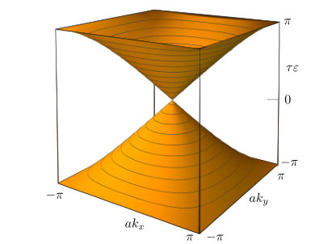
<figcaption class="paper-figure-caption"><b>Fig 1.</b> FIG. 1. Momentum dependence of the quasi-energy (1.1) of the local 2D quantum walk considered in Sec. II B (squared quantum walk, Floquet operator U√</figcaption>
</figure>
<figure class="paper-figure-card">
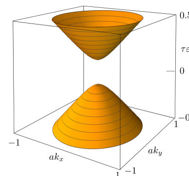
<figcaption class="paper-figure-caption"><b>Fig 2.</b> FIG. 2. Gapped cone of the Ho-Chalker quantum walk in the presence of the staggered potential V (r) = (2τ)−1 cos(πx/a).</figcaption>
</figure>
<figure class="paper-figure-card">

<figcaption class="paper-figure-caption"><b>Fig 3.</b> FIG. 3. Cut along the line kx = ky through the band struc- ture of the squared quantum walk, in the presence of a scalar potential V (r) = V cos(Q · r/a): the black curve is with- out any potential (V = 0), the red and blue curves are for τV = 1 and, respectively, Q = (π, π) and (π/2, π/2). The latter choice gaps the ε = 0 Dirac cone.</figcaption>
</figure>
<figure class="paper-figure-card">
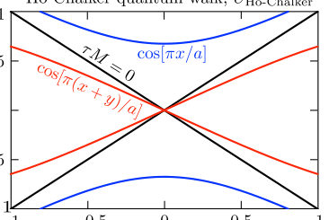
<figcaption class="paper-figure-caption"><b>Fig 4.</b> FIG. 4. Cut along the line kx = ky through the band struc- ture of the Ho-Chalker quantum walk, in the presence of an in-plane magnetization M(r) = (M, M, 0) cos(Q · r/a): the black curve is without any magnetization (M = 0), the red and blue curves are for τM = 1 and, respectively, Q = (π, π) and (π, 0). The latter choice gaps the ε = 0 Dirac cone.</figcaption>
</figure>
</div>

<p><strong>Summary.</strong> This paper demonstrates that while 1D quantum walks can mimic gapless Dirac physics with preserved symmetries, their 2D counterparts are fundamentally unstable. The authors prove that generic potential scattering terms break the necessary protecting symmetries, leading to the opening of a gap at zero energy for the Dirac cone.</p>
<p><strong>Why it may be interesting.</strong> This work provides a rigorous lattice model framework for understanding how topological protection, robust in continuum models, breaks down when discretized into higher dimensions due to the constraints of locality and symmetry on the underlying quantum walk operator.</p>
<details>
<summary>Detailed structure</summary>
<p><strong>Main problem.</strong> The study investigates whether a two-dimensional (2D) Dirac quantum walk, analogous to continuum physics models like graphene, retains topological protection against gapping induced by potential scattering or disorder.</p>
<p><strong>Main result.</strong> Unlike the 1D case, the 2D Dirac quantum walk is fundamentally fragile; its unpaired $\epsilon=0$ cone can be gapped by generic spatial inhomogeneities or potentials due to symmetry constraints imposed by locality.</p>
<p><strong>Method.</strong> The authors analyze the system using Floquet theory and examine the symmetries (chiral and time-reversal) of the lattice Hamiltonian. They employ mathematical tools involving Laurent polynomials to constrain the existence of gapless points.</p>
<p><strong>Model / system.</strong> The model is a local two-band quantum walk implemented on a $(2+1)$-dimensional space-time lattice, whose continuum limit approximates the massless Dirac equation. Specific realizations include Palindromic, Squared, and Ho-Chalker quantum walks.</p>
<p><strong>Key observables.</strong> Quasi-energies ($\epsilon_n$), gap size ($\Delta$) at $\epsilon=0$, and the preservation/breaking of chiral and time-reversal symmetries.</p>
<p><strong>Important parameters / regimes.</strong> The strength and periodicity ($\mathbf{Q}$) of applied potentials ($V$ or $M$), which act as disorder terms.</p>
<p><strong>Assumptions / limitations.</strong> The analysis primarily focuses on local, two-band spin-1/2 implementations and assumes the potential scattering is short-range correlated.</p>
<p><strong>Figures summary.</strong> Figures illustrate the momentum dependence of quasi-energies showing gap opening for various potentials (e.g., staggered potentials), confirming the gapping effect on the Dirac cone.</p>
<p><strong>Paper structure.</strong> The paper contrasts the robust 1D case with the fragile 2D case, demonstrating symmetry breakdown under disorder. It systematically tests different quantum walk constructions (Palindromic, Ho-Chalker) against specific potential scattering terms to prove gap opening.</p>
</details>
<details>
<summary>Abstract</summary>
<p>It is known that a one-dimensional (1D) quantum walk gives a local space-time discretization of the massless Dirac equation with a single quasi-energy cone (no fermion doubling at low energies), keeping the fundamental symmetries (chiral and time-reversal) of the continuum theory. We show that the analogous 2D construction is fundamentally more fragile. Local two-band quantum walks can have an unpaired Dirac cone, but the protecting symmetries then cease to be ordinary on-site symmetries: they become non-symmorphic, involving half-lattice translations, and are broken by generic spatial inhomogeneities. In particular, we demonstrate that the 2D Dirac quantum walk based on the Ho-Chalker network model can be gapped by potential scattering.</p>
</details>
<p><sub><a href="#top">↑ back to top</a></sub></p>

<p><a id="paper-2607.04488"></a></p>
<h3 id="trace-to-hilbert-schmidt-speed-ratio-in-quantum-dynamics-universal-bounds-and-effective-rank"><a href="http://arxiv.org/abs/2607.04488v1">Trace-to-Hilbert-Schmidt Speed Ratio in Quantum Dynamics: Universal Bounds and Effective Rank</a></h3>
<p><strong>Authors:</strong> Hossein Rangani Jahromi<br>
<strong>Type:</strong> theory · <strong>Category:</strong> other · <strong>PDF:</strong> <a href="https://arxiv.org/pdf/2607.04488v1">https://arxiv.org/pdf/2607.04488v1</a><br>
<strong>Analysis basis:</strong> full PDF text, analyzed in chunks
<strong>Topic relevance:</strong> <code>entanglement &amp; information structure</code> <strong>2/5</strong> · <code>correlated / nonlocal dissipation</code> <strong>1/5</strong> · <code>driven-dissipative phase transition</code> <strong>1/5</strong> · <code>methods for driven-dissipative</code> <strong>1/5</strong> · <code>non-equilibrium dynamics</code> <strong>1/5</strong> · <code>non-equilibrium universality</code> <strong>1/5</strong></p>
<div class="figure-strip-hint">↔ Scroll figures horizontally</div>
<div class="paper-figures-scroll">
<figure class="paper-figure-card">
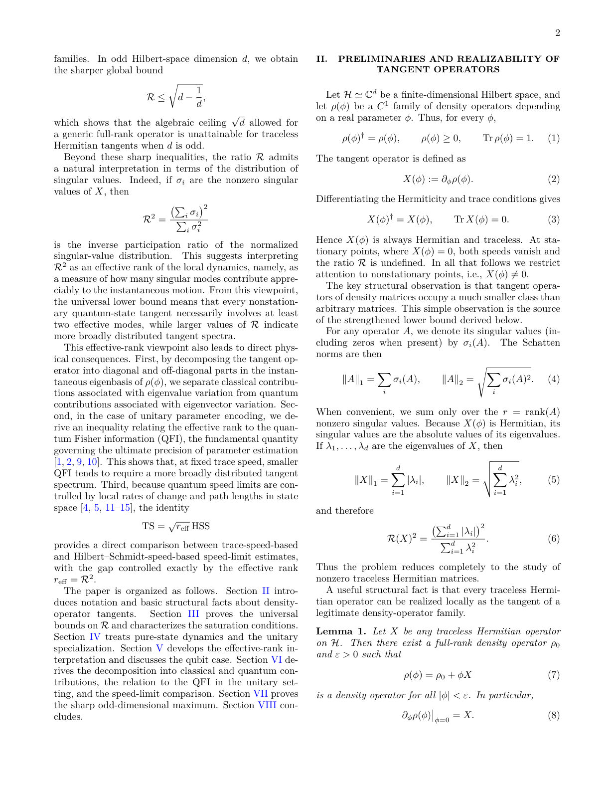
<figcaption class="paper-figure-caption"><b>Fig 1.</b> Low-resolution page preview, page 2</figcaption>
</figure>
<figure class="paper-figure-card">

<figcaption class="paper-figure-caption"><b>Fig 2.</b> Low-resolution page preview, page 3</figcaption>
</figure>
<figure class="paper-figure-card">
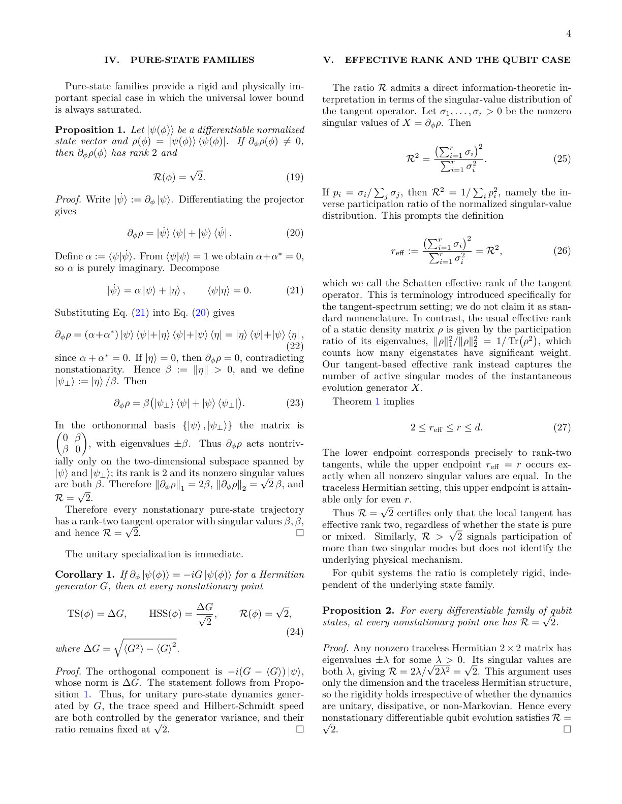
<figcaption class="paper-figure-caption"><b>Fig 3.</b> Low-resolution page preview, page 4</figcaption>
</figure>
<figure class="paper-figure-card">

<figcaption class="paper-figure-caption"><b>Fig 4.</b> Low-resolution page preview, page 5</figcaption>
</figure>
<figure class="paper-figure-card">
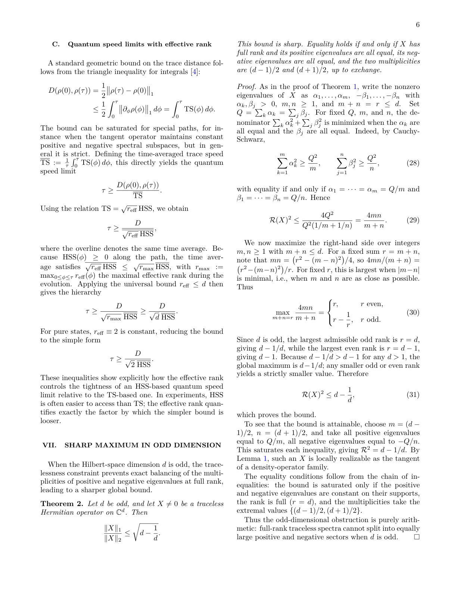
<figcaption class="paper-figure-caption"><b>Fig 5.</b> Low-resolution page preview, page 6</figcaption>
</figure>
</div>

<p><strong>Summary.</strong> This theoretical paper analyzes the Trace-to-Hilbert-Schmidt Speed Ratio ($\mathcal R$) for evolving quantum states. It derives sharp universal bounds on $\mathcal R$ based on the operator's rank, establishing that this ratio serves as an effective-rank diagnostic for local quantum dynamics. The results provide new constraints on quantum speed limits by linking them to spectral properties like the effective rank and QFI.</p>
<p><strong>Why it may be interesting.</strong> This work provides fundamental mathematical constraints on the rate of change of quantum states, linking geometric measures (norms) directly to spectral properties (effective rank), which is crucial for understanding measurement precision and dynamical limitations in open quantum systems.</p>
<details>
<summary>Detailed structure</summary>
<p><strong>Main problem.</strong> The paper investigates the Trace-to-Hilbert-Schmidt Speed Ratio, $\mathcal R$, for differentiable quantum states to establish universal bounds on local quantum dynamics.</p>
<p><strong>Main result.</strong> Sharp bounds are established: $\sqrt{2} \le \mathcal R \le \sqrt{r}$ for a tangent operator of rank $r$, with a global maximum bound derived for odd-dimensional Hilbert spaces. The ratio is identified as an effective-rank diagnostic.</p>
<p><strong>Method.</strong> The analysis relies on bounding the ratio of two norms ($\|\cdot\|_1 / \|\cdot\|_2$) applied to the Hermitian, traceless tangent operator $X = \partial_\phi
ho$, utilizing spectral properties and elementary inequalities.</p>
<p><strong>Model / system.</strong> The study concerns a differentiable family of finite-dimensional quantum states $
ho(\phi)$ evolving in time or parameter $\phi$. The dynamics are characterized by the tangent operator $X = \partial_\phi
ho$, which is constrained to be Hermitian and traceless.</p>
<p><strong>Key observables.</strong> Trace Speed ($\|\cdot\|_1$), Hilbert-Schmidt Speed ($\|\cdot\|_2$), Trace-to-Hilbert-Schmidt Speed Ratio ($\mathcal R$), Effective Rank ($r_{	ext{eff}}$), Quantum Fisher Information (QFI).</p>
<p><strong>Important parameters / regimes.</strong> The dimension of the Hilbert space ($d$) and the rank ($r$) of the tangent operator are key parameters determining the bounds.</p>
<p><strong>Assumptions / limitations.</strong> The analysis is restricted to nonstationary points where the tangent operator $X$ is non-zero, and it heavily leverages the Hermitian and traceless nature of $X$.</p>
<p><strong>Paper structure.</strong> The paper proceeds by defining $\mathcal R$, deriving bounds based on the rank $r$ (establishing $\sqrt{2} \le \mathcal R \le \sqrt{r}$), proving a sharper global bound for odd dimensions, and finally interpreting $\mathcal R^2$ as an effective-rank diagnostic linked to QFI and quantum speed limits.</p>
</details>
<details>
<summary>Abstract</summary>
<p>We study the ratio between the trace speed and the Hilbert-Schmidt speed for differentiable finite-dimensional quantum states, $\mathcal R(φ)=\|\partial_φρ(φ)\|_1/\|\partial_φρ(φ)\|_2$. Because $\partial_φρ(φ)$ is always Hermitian and traceless, this ratio is constrained more strongly than for a generic operator. For any nonzero tangent operator $X=\partial_φρ$ of rank $r$, we prove the sharp bounds $\sqrt{2}\le \|X\|_1/\|X\|_2\le \sqrt r$. The lower bound is attained exactly for rank-two tangents, while the upper bound is attained exactly when all nonzero singular values are equal, which in the traceless Hermitian setting requires even rank. At every nonstationary point of a pure-state family, the tangent has rank two, implying $\mathcal R=\sqrt2$. For odd Hilbert-space dimension $d$, we further prove the sharp global maximum $\mathcal R\le \sqrt{d-1/d}$, with equality characterized by full-rank spectra whose positive and negative eigenvalues are separately degenerate and have multiplicities differing by one. We identify $\mathcal R^2$ as the inverse participation ratio of the singular-value distribution of the tangent operator, giving $\mathcal R$ a natural interpretation as an effective-rank diagnostic for local quantum dynamics. Furthermore, we decompose the effective rank into classical (eigenvalue) and quantum (eigenvector) contributions and prove the bound $r_{\mathrm{eff}}\le r_C + r_Q$, with equality guaranteed when either component vanishes. We establish a direct inequality linking the effective rank to the quantum Fisher information (QFI), which forces a large number of active singular modes when the QFI is small relative to the squared trace speed. Finally, we derive a hierarchy of quantum speed limits in which the effective rank controls the tightness of bounds expressed through the Hilbert-Schmidt speed.</p>
</details>
<p><sub><a href="#top">↑ back to top</a></sub></p>

<p><a id="paper-2607.05086"></a></p>
<h3 id="high-precision-ab-initio-calculations-of-nuclear-binding-energies-tin-isotopes-from-dripline-to-dripline"><a href="http://arxiv.org/abs/2607.05086v1">High-precision ab initio calculations of nuclear binding energies: Tin isotopes from dripline to dripline</a></h3>
<p><strong>Authors:</strong> Urban Vernik, Pepijn Demol, Thomas Duguet, Alexander Tichai<br>
<strong>Type:</strong> theory · <strong>Category:</strong> other · <strong>PDF:</strong> <a href="https://arxiv.org/pdf/2607.05086v1">https://arxiv.org/pdf/2607.05086v1</a><br>
<strong>Analysis basis:</strong> full PDF text, analyzed in chunks
<strong>Topic relevance:</strong> <code>Keldysh / 2PI / non-Gaussian methods</code> <strong>2/5</strong> · <code>analog quantum simulation</code> <strong>1/5</strong> · <code>entanglement &amp; information structure</code> <strong>1/5</strong> · <code>methods for driven-dissipative</code> <strong>1/5</strong> · <code>non-equilibrium dynamics</code> <strong>1/5</strong></p>
<div class="figure-strip-hint">↔ Scroll figures horizontally</div>
<div class="paper-figures-scroll">
<figure class="paper-figure-card">
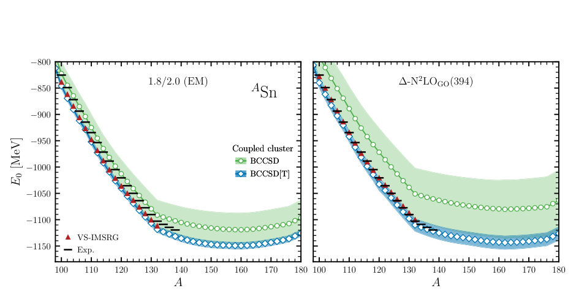
<figcaption class="paper-figure-caption"><b>Fig 1.</b> Figure 1. Ground-state energies of even-even tin isotopes with A = 100 −180 using BCCSD and BCCSD[T] calculations based on the 1.8/2.0 (EM) (left) and ∆-N2LOGO (right) χEFT Hamiltonians. Results from VS-IMSRG calculations are taken from Ref. [12]. See the main text for the discussion of many-body uncertainties.</figcaption>
</figure>
<figure class="paper-figure-card">

<figcaption class="paper-figure-caption"><b>Fig 2.</b> Figure 2. Two-neutron separation energies around the N = 50 shell closure (100Sn). BCCSD[T] calculations are shown for 1.8/2.0 (EM) (blue) and ∆-N2LOGO (orange). NLEFT calculations are taken from Ref. [28].</figcaption>
</figure>
<figure class="paper-figure-card">
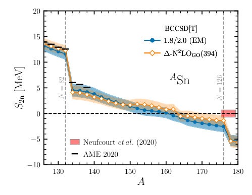
<figcaption class="paper-figure-caption"><b>Fig 3.</b> Figure 3. Two-neutron separation energies calculated in BCCSD[T] beyond the N = 82 shell closure (132Sn). Cal- culations details are similar to Fig. 2.</figcaption>
</figure>
</div>

<p><strong>Summary.</strong> This work applies high-precision ab initio calculations using Bogoliubov Coupled-Cluster theory to determine the binding energies of tin isotopes near the neutron drip line. By incorporating triples correlations, the authors significantly improve theoretical accuracy and map out how nuclear structure predictions conflict with existing Energy Density Functional models regarding exotic nuclei.</p>
<p><strong>Why it may be interesting.</strong> While focused on nuclear physics, the use of advanced many-body quantum field theory techniques (like coupled-cluster expansions) to solve complex Hamiltonians shares conceptual overlap with methods used in strongly correlated electron systems or open quantum system dynamics.</p>
<details>
<summary>Detailed structure</summary>
<p><strong>Main problem.</strong> To perform high-precision ab initio calculations of nuclear binding energies for tin isotopes across the neutron drip line.</p>
<p><strong>Main result.</strong> The predicted location of the neutron drip line is highly sensitive to the employed nuclear interactions and shows tension with recent Energy Density Functional predictions. The inclusion of triples corrections significantly improves accuracy by reducing uncertainty from tens of MeV to below 3 MeV in key isotopes.</p>
<p><strong>Method.</strong> Bogoliubov Coupled-Cluster (BCC) theory, specifically utilizing the BCCSD[T] approximation to account for leading three-body correlations beyond standard CCSD calculations.</p>
<p><strong>Model / system.</strong> The study focuses on even-even Tin (Sn) isotopes ($Z=50$) ranging from $N=50$ up to $N=126$. Calculations are based on realistic chiral Effective Field Theory ($\chi$EFT) two- and three-nucleon interactions.</p>
<p><strong>Key observables.</strong> Binding energies ($E_0$), two-neutron separation energies ($S_{2n}$), and the predicted location of the neutron drip line.</p>
<p><strong>Important parameters / regimes.</strong> The calculations use a spherical harmonic oscillator basis ($\hbar\omega = 12$ MeV) and are sensitive to the specific $\chi$EFT Hamiltonian employed (e.g., $1.8/2.0 (	ext{EM})$ vs. $\Delta-	ext{N}2	ext{LOGO}$).</p>
<p><strong>Assumptions / limitations.</strong> The primary approximations involve truncating the cluster expansion at BCCSD[T] and using a specific basis set, leading to residual uncertainties from missing higher-body correlations ($T_{k\ge 4}$) and basis incompleteness.</p>
<p><strong>Figures summary.</strong> Figure 1 compares ground-state energies calculated with BCCSD vs. BCCSD[T] against experimental values for Sn isotopes; Figure 2 and 3 show $S_{2n}$ around the $N=50$ shell closure and beyond $N=82$, respectively.</p>
<p><strong>Paper structure.</strong> The paper details the theoretical framework of BCC theory, progresses from BCCSD to the improved BCCSD[T] approximation by solving for triples correlations non-iteratively, applies this method to calculate binding energies across the Sn isotopic chain, and discusses the implications for nuclear structure models like EDFs.</p>
</details>
<details>
<summary>Abstract</summary>
<p>The location of the neutron drip line in tin isotopes has important consequences for our fundamental understanding of nuclear structure and nuclear forces as well as for astrophysical nucleosynthesis. Performing high-precision ab initio calculations of even-even tin isotopes from $N=50$ to $N=126$ based on chiral two- and three-nucleon interactions, the predicted drip-line location is found to be highly sensitive to the employed nuclear interactions and to exhibit tension with recent energy-density-functional predictions. On the neutron-deficient side, results are consistent with extrapolated two-neutron separation energies constrained by recent Penning-trap mass measurements.</p>
</details>
<p><sub><a href="#top">↑ back to top</a></sub></p>
<hr>
<p>
<a href="index.html">← Index</a>
 · <a href="papers_04.html">← Previous</a> · <a href="papers_06.html">Next →</a>
</p>
<hr>

</body>
</html>
